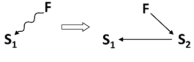
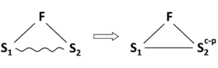
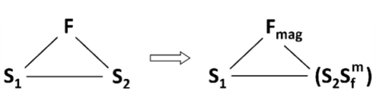
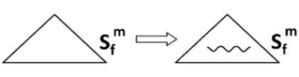
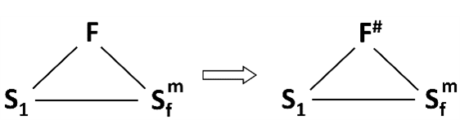

Công cụ giải quyết vấn đề

Các công cụ giải quyết vấn đề là tập hợp các phương tiện được thiết kế để xử lý những vấn đề then chốt cụ thể đã được xác định trong giai đoạn nhận diện vấn đề của dự án.
Mô hình sau là nền tảng cho mọi quy trình giải quyết vấn đề theo TRIZ:
Ở bước đầu tiên, một vấn đề then chốt được chuyển thành mô hình của vấn đề. Mô hình này sau đó được xử lý bằng công cụ dành riêng cho mô hình đó để tạo ra mô hình của giải pháp. Cuối cùng, ta tiến hành động não dựa trên mô hình giải pháp đã tạo để phát triển các ý tưởng giải pháp cụ thể.
Các công cụ giải quyết vấn đề được nhóm thành hai khối: khối yêu cầu hình thành mâu thuẫn (kỹ thuật hoặc vật lý) và khối không yêu cầu mâu thuẫn:
cần mâu thuẫn
- ARIZ
- bài toán tương tự (clone problem)
- các nguyên tắc sáng tạo
không cần mâu thuẫn
- tìm kiếm định hướng chức năng (FOS)
- các giải pháp sáng tạo tiêu chuẩn
- cơ sở dữ liệu hiệu ứng khoa học
Mối quan hệ giữa công cụ giải quyết vấn đề và mô hình vấn đề
Tùy vào cách mô hình hóa vấn đề mà chọn công cụ giải quyết tương ứng. Kết quả là mỗi công cụ sẽ tạo ra một mô hình giải pháp phù hợp. Bảng dưới minh họa mối liên hệ này:
| mô hình của vấn đề | công cụ xử lý mô hình vấn đề | mô hình giải pháp |
| mâu thuẫn kỹ thuật | 1. ma trận mâu thuẫn (Altshuller) | 1. nguyên tắc sáng tạo |
| mâu thuẫn vật lý | 1. thuật toán giải mâu thuẫn vật lý 2. tìm kiếm định hướng chức năng (FOS) 3. cơ sở dữ liệu hiệu ứng khoa học 4. áp dụng bài toán tương tự | 1. nguyên tắc sáng tạo 2. công nghệ tìm thấy thông qua FOS 3. hiệu ứng khoa học |
| Su-Field | 1. hệ 76 giải pháp sáng tạo tiêu chuẩn | 1. giải pháp sáng tạo tiêu chuẩn |
| chức năng | 1. tìm kiếm định hướng chức năng (FOS) 2. cơ sở dữ liệu hiệu ứng khoa học | 1. công nghệ tìm thấy thông qua FOS 2. hiệu ứng/hiện tượng khoa học |
Bài viết
- Mô hình hóa chất-trường
- Các giải pháp sáng tạo tiêu chuẩn (SIS)
- Phân tích chất-trường
- Mô hình chất-trường
- Các giải pháp sáng tạo tiêu chuẩn (SIS)
- Mâu thuẫn
- Mâu thuẫn kỹ thuật
- Ma trận mâu thuẫn
- Các tham số điển hình
- Ma trận mâu thuẫn
- Mâu thuẫn vật lý
- Thuật toán giải mâu thuẫn vật lý
- Nguyên tắc sáng tạo
- Mâu thuẫn kỹ thuật
- ARIZ
- Cặp xung đột
- Sản phẩm
- Công cụ
- Khối 1 ARIZ: Tái cấu trúc vấn đề ban đầu
- Yếu tố X (X-factor)
- Vùng tác động
- Thời gian tác động
- Bài toán vi mô (mini-problem)
- Kết quả cuối lý tưởng
- Tìm kiếm định hướng chức năng (FOS)
- Áp dụng bài toán tương tự
- Cơ sở dữ liệu hiệu ứng khoa học
Mô hình hóa chất-trường
Mô hình hóa chất-trường
Tương tự việc sử dụng mâu thuẫn, mô hình hóa chất-trường được dùng để mô hình hóa vấn đề đã được nhận diện trong giai đoạn phân tích của dự án. Tuy nhiên, nó mang lại một góc nhìn khác về vấn đề so với mâu thuẫn.
Giả định cơ bản của cách tiếp cận này là một hệ thống tối thiểu để hoạt động phải gồm 3 phần tử cơ bản:
1. 2 chất (S) – các đối tượng có khối lượng nghỉ tham gia trong hệ thống, và
2. 1 trường (F) – thực thể không có khối lượng nghỉ, tạo ra tương tác giữa các chất.
Các chất gắn trực tiếp với vấn đề then chốt cần giải quyết. Chúng có thể là các đối tượng vi mô, một thành phần đơn lẻ hoặc cả hệ thống kỹ thuật. Trường thường được chọn theo các loại trong mô hình MATChEM.
Trừu tượng hóa các phần tử này giúp biểu diễn vấn đề then chốt dưới dạng trực quan đơn giản:

Trong TRIZ cổ điển, công cụ dùng để xác định chất và trường cần thiết để tạo Su-Field của vấn đề là phân tích chất-trường. Ngày nay, công cụ này không còn sử dụng vì các nhược điểm then chốt xác định bằng CECA đã cung cấp thông tin chi tiết cho mục đích đó.
Công cụ dùng để xử lý các mô hình chất-trường (Su-Field) của vấn đề là hệ 76 giải pháp sáng tạo tiêu chuẩn (SIS), cho ra các mô hình giải pháp được biểu diễn bằng các SIS tương ứng. Trong một số trường hợp, các giải pháp này cũng có thể được mô tả dưới dạng Su-Field. Do đó, phân tích chất-trường là công cụ TRIZ duy nhất mà mô hình giải pháp có thể có cùng hình thức với mô hình vấn đề.

Bài viết
- Các giải pháp sáng tạo tiêu chuẩn (SIS)
- Phân tích chất-trường
- Mô hình chất-trường
Các giải pháp sáng tạo tiêu chuẩn (SIS)
Các giải pháp sáng tạo tiêu chuẩn (SIS)
Các giải pháp sáng tạo tiêu chuẩn (SIS) là tập hợp 76 mô hình giải pháp điển hình cho những mô hình vấn đề điển hình được biểu diễn dưới dạng mô hình chất-trường (Su-Field).
Tổng quan
Hệ các giải pháp sáng tạo tiêu chuẩn (SIS) là bộ sưu tập 76 giải pháp kỹ thuật điển hình, được phát triển dưới dạng mô hình chất-trường (Su-Field) mô tả tương tác giữa các chất và trường. Đây là công cụ để phân tích và tạo ra giải pháp cho các vấn đề kỹ thuật.
Hệ thống được Genrikh Altshuller xây dựng sau khi phân tích hàng nghìn bằng sáng chế, từ đó nhận diện các mẫu lặp lại trong cách giải quyết vấn đề ở nhiều lĩnh vực kỹ thuật khác nhau. Lịch sử của SIS bắt đầu từ thập niên 1970, khi Altshuller và cộng sự phát triển bộ 28 giải pháp tiêu chuẩn đầu tiên dựa trên mô hình Su-Field. Hệ thống được mở rộng trong suốt thập niên 1980, hoàn thiện thành 76 tiêu chuẩn mà Altshuller cho là đủ đầy. Tuy nhiên, ông không loại trừ khả năng hệ thống sẽ được mở rộng thêm trong tương lai.
Vì vậy danh sách giải pháp sáng tạo tiêu chuẩn không phải là hữu hạn. Về lý thuyết, những khuyến nghị mới có thể được khám phá và bổ sung dựa trên công nghệ mới và các xu hướng kỹ thuật đang phát triển. Dẫu vậy, bộ sưu tập hiện tại đã cung cấp nền tảng vững chắc để xử lý nhiều thách thức kỹ thuật.
Cấu trúc hệ thống
Hệ giải pháp sáng tạo tiêu chuẩn gồm 76 SIS, được tổ chức thành năm lớp. Cấu trúc logic này giúp điều hướng và áp dụng giải pháp phù hợp với từng loại vấn đề kỹ thuật:
- Lớp 1: Xây dựng và phá hủy Su-Field,
- Lớp 2: Phát triển Su-Field,
- Lớp 3: Chuyển sang siêu hệ thống và cấp vi mô,
- Lớp 4: Các giải pháp sáng tạo tiêu chuẩn cho đo lường và phát hiện,
- Lớp 5: Các giải pháp sáng tạo tiêu chuẩn về cách áp dụng SIS.
Danh sách đầy đủ 76 giải pháp sáng tạo tiêu chuẩn
Phần dưới đây trình bày nội dung gốc do G. Altshuller phát triển (bao gồm cả hình minh họa).
Lớp 1: Xây dựng và phá hủy Su-Field
Các SIS trong Lớp 1 dùng để giải quyết vấn đề kỹ thuật bằng cách cải thiện tương tác và loại bỏ tác động có hại. Chúng tập trung vào việc xây dựng hoặc phá hủy các mô hình Su-Field khi mô hình bị thiếu (thiếu S1, S2 hoặc F), đầy đủ nhưng không hoạt động (F không phù hợp) hoặc gây hại.
Lớp này gồm 2 phân lớp và 13 SIS.
1.1. Tổng hợp hệ chất-trường
Ý tưởng chính của phân lớp này thể hiện rõ ở SIS 1.1.1: để tổng hợp một hệ kỹ thuật hoạt động được, trong trường hợp đơn giản nhất cần chuyển từ Su-Field chưa hoàn chỉnh sang Su-Field hoàn chỉnh. Việc xây dựng Su-Field thường gặp khó khăn vì các ràng buộc khi đưa thêm chất hoặc trường. Các tiêu chuẩn 1.1.2 đến 1.1.8 cho thấy những cách “lách” điển hình trong các tình huống như vậy.
1.1.1. Tổng hợp hệ chất-trường
Nếu có một đối tượng khó thay đổi theo yêu cầu và điều kiện không giới hạn việc bổ sung chất hoặc trường, hãy giải quyết bằng cách tổng hợp SIS, tức bổ sung phần tử còn thiếu.

1.1.2. Cải thiện tương tác bằng cách bổ sung phụ gia vào đối tượng
Nếu tồn tại Su-Field khó thay đổi và không hạn chế việc đưa phụ gia vào các chất hiện có, giải pháp là chuyển sang Su-Field phức hợp bên trong, nghĩa là thêm phụ gia bên trong cho S1 hoặc S2. Điều này tăng khả năng điều khiển hoặc bổ sung thuộc tính cần thiết cho Su-Field. Phụ gia có thể được thêm vĩnh viễn hoặc tạm thời.

S1 là sản phẩm, S2 là công cụ, S3 là phụ gia. Dấu ngoặc biểu thị liên kết bên trong (liên kết bên ngoài không có ngoặc).
1.1.3. Cải thiện tương tác bằng cách bổ sung phụ gia vào hệ thống
Nếu tồn tại Su-Field khó thay đổi và không hạn chế việc đưa phụ gia vào các chất hiện có, giải pháp là chuyển sang Su-Field phức hợp bên ngoài, tức bổ sung phụ gia bên ngoài cho S1 hoặc S2. Điều này tăng khả năng điều khiển hoặc bổ sung thuộc tính cần thiết. Phụ gia có thể được thêm vĩnh viễn hoặc tạm thời.

1.1.4. Tận dụng môi trường để cải thiện tương tác
Nếu tồn tại Su-Field khó thay đổi và không hạn chế việc bổ sung phụ gia vào các chất hiện có, giải pháp là thêm một phụ gia lấy từ môi trường hoặc siêu hệ thống.
1.1.5. Biến đổi môi trường để cải thiện tương tác
Nếu môi trường bên ngoài không có sẵn chất cần thiết để tổng hợp Su-Field, có thể thu được các chất này bằng cách thay đổi môi trường, phân giải môi trường hoặc bổ sung phụ gia vào môi trường.
1.1.6. Đảm bảo hiệu ứng tác động tối thiểu
Khi cần hiệu ứng tác động tối thiểu (đo được, tối ưu) nhưng khó hoặc không thể đảm bảo trong điều kiện hiện có, hãy sử dụng tác động tối đa (của trường hoặc chất) rồi loại bỏ phần dư. Phần dư của chất được loại bỏ bằng trường, phần dư của trường được loại bỏ bằng chất. Phần dư được thể hiện bằng đường đôi.

1.1.7. Đảm bảo hiệu ứng tác động tối đa
Nếu cần tác động tối đa lên một chất nhưng không được phép, hãy giữ nguyên tác động tối đa nhưng hướng nó sang chất khác gắn với chất ban đầu.
1.1.8. Sử dụng chế độ tối đa có chọn lọc
Khi cần tác động tối đa có chọn lọc (tối đa ở vùng nhất định, tối thiểu ở vùng khác), trường phải đạt mức tối đa, nhưng:
1.1.8.1. Chế độ tối đa có chọn lọc: trường tối đa
Trong trường hợp thứ nhất, ta đưa vào một chất bảo vệ tại nơi cần duy trì tác động tối thiểu.
1.1.8.2. Chế độ tối đa có chọn lọc: trường tối thiểu
Trong trường hợp thứ hai, với chế độ tối thiểu, ta đưa cục bộ các chất tạo thêm trường phụ, ví dụ hỗn hợp nhiệt alumin (thermit) cho tác động nhiệt, thuốc nổ cho tác động cơ học.
1.2. Phá hủy Su-Field
Phân lớp 1.2 bao gồm các SIS dùng để phá hủy Su-Field và loại bỏ hoặc trung hòa tác động có hại trong đó. Ý tưởng mạnh nhất của phân lớp này là huy động những phần tử cần thiết bằng cách tận dụng nguồn lực sẵn có của hệ chất-trường. Tiêu chuẩn 1.2.2 đặc biệt quan trọng: theo đó, chức năng của chất mới được thực hiện bởi chất hiện có đã được biến đổi.
1.2.1. Loại bỏ tương tác có hại bằng cách đưa vào chất trung gian
Nếu giữa hai chất trong hệ chất-trường vừa có tác động hữu ích vừa có tác động có hại và không cần duy trì tiếp xúc trực tiếp, hãy đưa một chất thứ ba vào giữa chúng. Chất này phải sẵn có hoặc đủ rẻ.

Mũi tên lượn biểu thị tác động cần loại bỏ.
1.2.2. Loại bỏ tương tác có hại bằng cách biến đổi chất hiện có
Nếu giữa hai chất vừa có tác động hữu ích vừa có tác động có hại, không cần duy trì tiếp xúc trực tiếp và việc dùng chất lạ bị cấm hoặc bất tiện, giải pháp là đưa vào chất thứ ba nằm giữa hai chất. Trong trường hợp này, chất thứ ba là biến thể của chất thứ nhất hoặc thứ hai.

Lưu ý: S3 có thể được đưa vào hệ như một chất sẵn có từ siêu hệ thống hoặc được tạo ra (nhờ F1 hoặc F2) từ S1 hoặc S2. Ví dụ S3 có thể là “khoảng trống”, bọt khí, bọt xốp…
1.2.3. Loại bỏ tác hại của trường bằng chất hy sinh
Nếu cần loại bỏ tác động có hại của một trường lên chất, hãy đưa vào chất thứ hai hứng chịu tác động có hại đó.

1.2.4. Loại bỏ tác động có hại bằng một trường đối kháng mới
Nếu giữa hai chất trong Su-Field vừa có tác động hữu ích vừa có tác động có hại và phải duy trì tiếp xúc trực tiếp, hãy chuyển sang hệ chất-trường kép – tác động hữu ích được giữ bởi trường hiện có, còn trường mới đối kháng sẽ trung hòa (hoặc biến đổi) tác động có hại.
1.2.5. “Tắt” trường từ
Nếu cần phá hủy Su-Field có trường từ, hãy dùng các hiệu ứng vật lý có khả năng “tắt” tính sắt từ của chất (ví dụ khử từ bằng tác động cơ học hoặc gia nhiệt vượt điểm Curie).

Lớp 2: Phát triển Su-Field
Lớp 2 của các giải pháp sáng tạo tiêu chuẩn dùng để nâng cao hiệu quả hệ kỹ thuật thông qua những điều chỉnh nhỏ.
Lớp này gồm 4 phân lớp và 23 SIS.
2.1. Chuyển sang Su-Field tinh vi hơn
Có thể tăng hiệu quả của Su-Field bằng cách chuyển từ Su-Field đơn giản sang Su-Field tinh vi hơn – dạng chuỗi hoặc dạng kép. Những thay đổi này tương đối nhỏ nhưng đem lại chất lượng mới và tăng cường những đặc tính hiện có, đặc biệt là khả năng điều khiển hệ thống.
2.1.1. Chuyển sang Su-Field dạng chuỗi
Khi cần tăng hiệu quả Su-Field, hãy biến S1 hoặc S2 thành một Su-Field độc lập được điều khiển, từ đó tạo ra Su-Field dạng chuỗi.
S3 hoặc S4 cũng có thể được biến thành Su-Field độc lập được điều khiển.

2.1.2. Chuyển sang Su-Field kép
Nếu Su-Field chưa đủ mạnh và việc thay thế các phần tử là không thể, hãy bổ sung một trường thứ hai để tạo Su-Field kép có hiệu quả cao hơn.
2.2. Tăng cường Su-Field
Ý tưởng chung của sáu SIS trong phân lớp này là tăng hiệu quả của Su-Field – đơn giản hoặc tinh vi – mà không cần đưa trường hoặc chất mới. Điều này đạt được bằng cách khai thác mạnh hơn nguồn lực chất-trường sẵn có.
2.2.1. Chuyển sang trường dễ điều khiển hơn
Có thể tăng hiệu quả của Su-Field bằng cách thay trường khó điều khiển (hoặc không điều khiển được) bằng trường dễ điều khiển hơn, ví dụ thay trường trọng lực bằng trường cơ, cơ-điện…
2.2.2. Phân đoạn chất
Có thể cải thiện hiệu quả Su-Field bằng cách tăng mức độ phân đoạn của S1 hoặc S2.

Lưu ý:
- Ký hiệu Sm biểu thị chất đã được phân đoạn thành nhiều hạt nhỏ (cát, bột, viên…).
- SIS 2.2.2 phản ánh một trong các xu hướng của TESE, tức phân đoạn thành phần.
2.2.3. Chuyển sang chất mao dẫn xốp
Một trường hợp đặc biệt của phân đoạn chất là chuyển từ chất rắn sang chất mao dẫn xốp. Lộ trình chuyển đổi như sau:

chất khối đồng nhất
chất có một khoang rỗng
chất có nhiều khoang (chất đục lỗ)
chất mao dẫn xốp
chất mao dẫn xốp có cấu trúc lỗ rỗng xác định (kích thước nhất định)
Khi phát triển theo hướng này, khả năng đưa chất lỏng vào khoang/lỗ rỗng và sử dụng các hiệu ứng vật lý tăng lên.

2.2.4. Động hóa Su-Field
Có thể cải thiện hiệu quả Su-Field bằng cách tăng mức độ động hóa, tức chuyển sang cấu trúc hệ thống linh hoạt hơn, thay đổi nhanh hơn.

Lưu ý: Ký hiệu tam giác có đường lượn biểu thị Su-Field động thay đổi trong quá trình hoạt động.
Động hóa S2 thường bắt đầu bằng việc thêm khớp. Cấp độ động hóa tiếp theo: một khớp -> nhiều khớp -> chất mềm dẻo.
Động hóa trường thường chuyển từ trường hằng sang trường xung.
2.2.5. Thay đổi cấu trúc của trường
Có thể tăng hiệu quả Su-Field bằng cách chuyển từ trường đồng nhất hoặc không cấu trúc sang trường không đồng nhất hoặc trường có cấu trúc đặc biệt (ổn định hoặc biến thiên theo thời gian và không gian).
Lưu ý: Dấu # bên cạnh chữ F biểu thị trường có cấu trúc đặc biệt biến thiên theo thời gian và không gian.
Nếu một chất trong Su-Field hoặc có thể tham gia Su-Field cần cấu trúc không gian cụ thể, quá trình nên diễn ra trong trường có cấu trúc phù hợp với cấu trúc yêu cầu của chất.

2.2.6. Thay đổi cấu trúc của chất
Có thể tăng hiệu quả Su-Field bằng cách chuyển từ chất đồng nhất hoặc không cấu trúc sang chất không đồng nhất hoặc chất có cấu trúc đặc biệt (ổn định hoặc biến thiên theo thời gian và không gian).

Lưu ý: Dấu # bên cạnh chữ S biểu thị chất có cấu trúc đặc biệt biến thiên theo thời gian và không gian.
Nếu cần tạo hiệu ứng nhiệt mạnh tại những vị trí nhất định (điểm, đường), nên đưa các chất tỏa nhiệt vào những vị trí đó từ trước.
2.3. Tăng cường phối hợp nhịp điệu
Phân lớp 2.3 bao gồm các SIS giúp tăng cường Su-Field theo cách tiết kiệm. Thay vì đưa thêm hoặc thay đổi đáng kể chất hay trường, các SIS chỉ yêu cầu thay đổi định lượng – tần số, kích thước hoặc khối lượng. Nhờ đó, ta đạt được hiệu ứng mới đáng kể với mức thay đổi tối thiểu của hệ thống.
2.3.1. Phối hợp nhịp điệu giữa trường và chất
Có thể tăng hiệu quả Su-Field bằng cách đồng bộ tần số của trường với tần số riêng của chất.
2.3.2. Phối hợp nhịp điệu giữa các trường sử dụng
Trong Su-Field phức tạp hơn, cần đồng bộ tần số của các trường được sử dụng.
2.3.3. Phối hợp những hoạt động xung khắc hoặc độc lập trước đó
Khi hai hoạt động, ví dụ thay đổi và đo lường, vốn xung khắc nhau, có thể thực hiện một hoạt động trong khoảng tạm dừng của hoạt động kia. Quan trọng: khoảng dừng của hoạt động này phải được lấp đầy bởi hoạt động kia.
2.4. Fe-Field (Su-Field tinh vi đã được tăng cường)
Fe-Field là Su-Field trong đó một trong các chất được phân đoạn, có tính từ và ít nhất một trường là trường điện từ.
Có thể tăng cường bằng nhiều cách điển hình cùng lúc. Su-Field mà chất từ được phân đoạn là loại dễ tăng cường nhất.
2.4.1. Chuyển sang Proto-Fe-Field
Có thể cải thiện hiệu quả Su-Field bằng cách sử dụng chất sắt từ (ở dạng khối) và trường từ.

Lưu ý: Đây là SIS sử dụng chất sắt từ chưa phân đoạn. Ta gọi đây là Proto-Fe-Field hoặc các trạng thái trung gian khác.
SIS này áp dụng không chỉ cho Su-Field đơn giản mà còn cho Su-Field phức hợp (có phụ gia) cũng như Su-Field mà phụ gia là một phần của môi trường.
2.4.2. Chuyển sang Fe-Field
Có thể cải thiện hiệu quả Su-Field bằng cách chuyển từ Su-Field hoặc Proto-Fe-Field sang Fe-Field bằng cách thay một trong các chất bằng hạt sắt từ (hoặc thêm hạt sắt từ như mạt, viên, hạt…) và sử dụng trường từ hoặc trường điện từ.
Khả năng điều khiển tăng lên khi mức độ phân mảnh của hạt sắt từ tăng, vì vậy sự phát triển của Fe-Field theo tuyến:
hạt
bột
hạt sắt từ phân tán mịn
Khả năng điều khiển cũng tăng khi mức độ phân mảnh của chất được bổ sung hạt sắt từ tăng lên. Tuyến phát triển:
chất khối
hạt
bột
chất lỏng

Lưu ý:
Chuyển sang Fe-Field có thể xem là sự kết hợp của hai SIS – 2.4.1 (chuyển sang Proto-Fe-Field) và 2.2.2 (phân đoạn chất).
Khi trở thành Fe-Field, Su-Field lặp lại chu kỳ phát triển nhưng ở cấp độ mới vì Fe-Field có khả năng điều khiển và hiệu quả cao. Các SIS của phân lớp 2.4 có thể coi là “đồng vị” của các SIS phân lớp 2.1–2.3. Việc tách Fe-Field thành phân lớp riêng là hợp lý (ít nhất ở giai đoạn hiện tại của SIS) do tầm quan trọng thực tiễn đặc biệt của Fe-Field. Ngoài ra, Fe-Field là công cụ nghiên cứu chính xác hơn để khảo sát các Su-Field thô và dự đoán sự phát triển của chúng.
2.4.3. Sử dụng chất lỏng sắt từ
Có thể tăng hiệu quả Fe-Field bằng cách sử dụng chất lỏng sắt từ – các hạt sắt từ dạng keo phân tán trong dầu hỏa, silicone hoặc nước. SIS 2.4.3 có thể xem là điểm cuối cùng trong lộ trình phát triển theo SIS 2.4.2.
2.4.4. Sử dụng chất mao dẫn xốp trong Fe-Field
Có thể tăng hiệu quả Fe-Field bằng cách sử dụng cấu trúc mao dẫn xốp – đặc điểm của nhiều Fe-Field.
2.4.5. Chuyển sang Fe-Field phức hợp
Nếu cần tăng khả năng điều khiển của hệ bằng cách chuyển sang Fe-Field nhưng không thể thay chất bằng hạt sắt từ, có thể bổ sung phụ gia vào một trong các chất để tạo Fe-Field phức hợp bên trong hoặc bên ngoài.

2.4.6. Chuyển sang Fe-Field bằng cách sử dụng môi trường bên ngoài
Nếu cần tăng khả năng điều khiển bằng cách chuyển từ Su-Field sang Fe-Field nhưng không thể thay chất bằng hạt sắt từ (hoặc bổ sung phụ gia), hãy đưa hạt sắt từ vào môi trường bên ngoài và điều khiển hệ thống bằng trường từ thông qua việc thay đổi tham số môi trường (SIS 2.4.3).

Các chất lỏng điện lưu biến (electrorheological) được điều khiển bằng trường điện cũng có thể dùng làm môi trường bên ngoài.
2.4.7. Sử dụng các hiệu ứng vật lý
Có thể điều khiển Fe-Field bằng cách sử dụng các hiệu ứng vật lý.
2.4.8. Động hóa Fe-Field
Có thể cải thiện hiệu quả Fe-Field bằng cách tăng mức độ động hóa, tức chuyển sang cấu trúc hệ thống linh hoạt và thay đổi nhanh hơn.

2.4.9. Thay đổi cấu trúc Fe-Field
Có thể tăng hiệu quả Fe-Field bằng cách chuyển từ trường đồng nhất sang trường không đồng nhất hoặc từ trường không cấu trúc sang trường có cấu trúc đặc biệt (ổn định hoặc biến thiên theo thời gian và không gian).

2.4.10. Phối hợp nhịp điệu của Fe-Field
Có thể cải thiện hiệu quả Proto-Fe-Field và Fe-Field bằng cách phối hợp nhịp điệu của các phần tử trong đó.
2.4.11. Chuyển sang E-Field (Su-Field với dòng điện tương tác)
Nếu khó đưa chất sắt từ hoặc từ hóa chất, hãy sử dụng tương tác giữa trường điện từ bên ngoài với dòng điện tiếp xúc trực tiếp hoặc dòng điện cảm ứng, hoặc tương tác giữa các dòng điện này với nhau.
Lưu ý:
- Nếu Fe-Field là SIS với hạt sắt từ, thì E-Field là SIS với dòng điện hoặc các dòng điện tương tác thay cho hạt sắt từ.
- Sự phát triển của E-Field – tương tự Fe-Field – lặp lại tuyến tiến hóa chung của Su-Field:

E-Field đơn giản
E-Field phức hợp
E-Field dựa trên môi trường bên ngoài
động hóa
phân đoạn/cấu trúc hóa
phối hợp nhịp điệu
2.4.12. Sử dụng chất lỏng điện lưu biến
Một dạng đặc biệt của E-Field là Su-Field với huyền phù điện lưu biến (các hạt mịn không dẫn nhưng nhạy điện), có độ nhớt điều khiển được. Nếu không thể dùng chất lỏng sắt từ, có thể sử dụng huyền phù điện lưu biến.
Lớp 3: Chuyển sang siêu hệ thống và cấp vi mô
Lớp 3 của các giải pháp sáng tạo tiêu chuẩn áp dụng cho các hệ kỹ thuật có hiệu suất chưa đủ. Hiệu quả của chúng được cải thiện bằng cách phát triển giải pháp ở các cấp hệ thống khác, như cấp siêu hệ thống hoặc cấp vi mô.
Lớp này gồm 2 phân lớp và 6 SIS.
3.1. Chuyển sang hệ hai – đa hợp
Song song với cải tiến bên trong (các SIS của Lớp 2) tồn tại tuyến phát triển bên ngoài: ở bất kỳ giai đoạn phát triển nội bộ nào, hệ thống cũng có thể được tích hợp với các thành phần của siêu hệ thống để đạt chất lượng mới.
3.1.1. Chuyển sang hệ hai – đa hợp
Ở bất kỳ giai đoạn phát triển nào, có thể tăng hiệu quả Su-Field bằng cách tích hợp hệ thống với hệ khác (hoặc nhiều hệ) thành hệ hai hợp hoặc đa hợp tinh vi hơn (chuyển hệ cấp 1a).
3.1.2. Phát triển liên kết trong hệ hai – đa hợp
Tăng hiệu quả của các hệ hai – đa hợp được tổng hợp chủ yếu bằng cách phát triển liên kết giữa các phần tử của Su-Field.
Các hệ hai – đa hợp mới hình thành thường “không có liên kết”, tức chỉ là “đống” thành phần. Việc phát triển nhằm củng cố các liên kết. Mặt khác, các phần tử trong hệ mới đôi khi được nối bằng liên kết cứng. Khi đó cần tăng mức độ động hóa của liên kết.
không liên kết
liên kết cứng
liên kết linh hoạt
liên kết bằng trường
3.1.3. Tăng độ khác biệt giữa các phần tử trong hệ hai – đa hợp
3.1.3. Tăng độ khác biệt giữa các phần tử trong hệ hai – đa hợp
Hiệu quả của hệ hai – đa hợp tăng lên khi độ khác biệt giữa các phần tử của Su-Field tăng (chuyển hệ cấp 1b):
các phần tử giống hệt
phần tử có đặc tính lệch nhau
phần tử khác nhau
tổ hợp nghịch đảo “phần tử và phản phần tử”
3.1.4. Cắt gọn hệ hai – đa hợp
Có thể cải thiện hiệu quả của hệ hai – đa hợp bằng cách cắt gọn. Hệ hai – đa hợp bị cắt hoàn toàn sẽ trở lại thành hệ đơn. Chu kỳ có thể lặp lại.
3.1.5. Thuộc tính đối nghịch của hệ và các phần của nó
Có thể cải thiện hiệu quả của hệ hai – đa hợp bằng cách phân bổ các thuộc tính đối nghịch giữa toàn hệ và các phần. Hệ hai cấp được dùng, trong đó toàn hệ có thuộc tính C còn các phần (tiểu phần) có thuộc tính phản C (chuyển hệ cấp 1c).
3.2. Chuyển sang cấp vi mô
Có hai cách chuyển hệ:
- chuyển sang siêu hệ (“đi lên” – các SIS phân lớp 3.1),
- chuyển sang cấp vi mô (“đi xuống” – các SIS phân lớp 3.2).
3.2.1. Chuyển sang cấp vi mô
Ở bất kỳ giai đoạn phát triển nào, có thể cải thiện hiệu quả hệ bằng chuyển hệ cấp 2: từ cấp vĩ mô xuống vi mô, khi hệ hoặc một phần của nó được thay bằng chất có khả năng thực hiện hành động cần thiết khi tương tác với trường.
Lớp 4: Các giải pháp sáng tạo tiêu chuẩn cho đo lường và phát hiện
Lớp 4 của các giải pháp sáng tạo tiêu chuẩn áp dụng cho các vấn đề đo lường hoặc phát hiện.
Lớp này gồm 5 phân lớp và 17 SIS.
4.1. Cách đi vòng
Khi cần đo lường hoặc phát hiện, khuyến nghị thay đổi nguyên lý hoạt động sao cho không cần đo hay phát hiện nữa mà vẫn đảm bảo độ chính xác và chi phí yêu cầu.
4.1.1. Biến đổi hệ thống để không cần đo hay phát hiện
Khi cần đo lường hoặc phát hiện, nên biến đổi hệ thống sao cho không cần đo hay phát hiện nữa.
4.1.2. Đo một bản sao hoặc hình ảnh
Nếu không thể giải bài toán phát hiện hoặc đo bằng SIS 4.1.1, hãy thay thao tác trực tiếp lên đối tượng bằng thao tác trên bản sao của nó. Ví dụ thay vì đo trực tiếp đống gỗ trên toa tàu, đo từ bức ảnh chụp với tỷ lệ xác định.
4.1.3. Phát hiện thay đổi liên tiếp
Nếu không thể giải bài toán phát hiện hoặc đo bằng SIS 4.1.1 hoặc 4.1.2, hãy chuyển nó thành nhiệm vụ ghi nhận chuỗi thay đổi.
4.2. Tạo Su-Field đo lường
Khi tạo Su-Field đo lường, chiến lược giống như khi tạo Su-Field để cải thiện: hoàn thiện Su-Field bằng cách bổ sung chất hoặc trường còn thiếu. Điểm khác biệt là đầu ra của Su-Field đo lường là một trường.
4.2.1. Tạo Su-Field đo lường
Nếu một đối tượng không phải Su-Field khó phát hiện hoặc đo, có thể tạo Su-Field đơn hoặc kép với trường đầu ra.

4.2.2. Chuyển sang Su-Field đo lường phức hợp
Nếu hệ (hoặc một phần) khó phát hiện hoặc đo, có thể chuyển sang Su-Field phức hợp bên trong hoặc bên ngoài bằng cách đưa các phụ gia dễ phát hiện (đánh dấu).

4.2.3. Chuyển sang Su-Field đo lường dựa trên môi trường bên ngoài
Nếu hệ khó phát hiện hoặc đo tại một thời điểm và không thể đưa phụ gia tạo trường dễ phát hiện, hãy đưa các phụ gia đó vào môi trường bên ngoài để đánh giá sự thay đổi trạng thái của hệ.

4.2.4. Tận dụng nguồn lực môi trường
Nếu không thể đưa phụ gia vào môi trường bên ngoài (theo SIS 4.2.3), có thể thu được phụ gia bằng cách tận dụng nguồn lực môi trường, ví dụ phân giải môi trường hoặc thay đổi trạng thái vật lý của nó (bọt khí tạo bằng điện phân, xâm thực… ).
4.3. Tăng cường Su-Field đo lường
Có thể tăng cường Su-Field đo lường bằng cách áp dụng hiệu ứng vật lý và phối hợp nhịp điệu.
4.3.1. Sử dụng các hiệu ứng vật lý
Có thể cải thiện hiệu quả phát hiện hoặc đo Su-Field bằng cách sử dụng các hiệu ứng vật lý.
4.3.2. Sử dụng cộng hưởng của đối tượng được điều khiển
Nếu không thể phát hiện hoặc đo trực tiếp sự thay đổi trong hệ và không thể truyền trường qua hệ, hãy kích thích dao động cộng hưởng trong toàn hệ hoặc một phần. Thay đổi tần số dao động giúp nhận biết sự thay đổi trong hệ.

4.3.3. Sử dụng cộng hưởng của đối tượng tích hợp
Nếu không thể áp dụng SIS 4.3.2, có thể đánh giá trạng thái hệ bằng cách theo dõi thay đổi tần số riêng của một đối tượng tích hợp với hệ (trong môi trường ngoài).
4.4. Chuyển sang Fe-Field đo lường
Su-Field đo lường có xu hướng mạnh chuyển thành Fe-Field.
4.4.1. Chuyển sang Proto-Fe-Field đo lường
Su-Field với trường không từ có xu hướng chuyển thành Proto-Fe-Field, tức Su-Field với chất sắt từ và trường từ.
4.4.2. Chuyển sang Fe-Field đo lường
Khi cần tăng hiệu quả phát hiện hoặc đo bằng Proto-Fe-Field hoặc Su-Field, hãy chuyển sang Fe-Field. Có thể thay một trong các chất bằng hạt sắt từ hoặc sử dụng phụ gia sắt từ rồi đo trường từ.
4.4.3. Chuyển sang Fe-Field đo lường phức hợp
Nếu cần tăng hiệu quả phát hiện hoặc đo bằng cách chuyển sang Fe-Field nhưng không thể thay chất bằng hạt sắt từ, hãy tạo Fe-Field phức hợp bằng cách đưa phụ gia vào chất.

4.4.4. Chuyển sang Fe-Field đo lường dựa trên môi trường bên ngoài
Nếu cần tăng hiệu quả phát hiện hoặc đo bằng cách chuyển từ Su-Field sang Fe-Field nhưng không thể đưa hạt sắt từ vào hệ, hãy đưa chúng vào môi trường bên ngoài.
4.4.5. Sử dụng các hiệu ứng vật lý
Khi cần tăng hiệu quả phát hiện hoặc đo, hãy sử dụng các hiệu ứng khoa học, ví dụ điểm Curie, hiệu ứng Hopkinson hoặc Barkhausen, hiệu ứng từ đàn hồi…
4.5. Hướng phát triển của Su-Field đo lường
Su-Field đo lường phát triển thông qua các chuyển hệ quen thuộc, nhưng cũng có những đặc điểm riêng.
4.5.1. Chuyển sang hệ hai – đa hợp đo lường
Ở bất kỳ giai đoạn nào, có thể tăng hiệu quả Su-Field đo lường bằng cách chuyển sang hệ hai – đa hợp.
4.5.2. Chuyển sang đo đạo hàm
Su-Field đo lường phát triển theo hướng:
đo hàm
đo đạo hàm bậc nhất
đo đạo hàm bậc hai
Lớp 5: Các giải pháp sáng tạo tiêu chuẩn hỗ trợ áp dụng SIS
Lớp 5 của các giải pháp sáng tạo tiêu chuẩn đưa ra khuyến nghị về cách đưa chất mới, trường mới hoặc hiệu ứng khoa học vào hiệu quả hơn khi áp dụng các SIS ở bốn lớp trước. Nó cung cấp các “trợ thủ” để đáp ứng ràng buộc của dự án.
Lớp này gồm 5 phân lớp và 17 SIS.
5.1. Đặc thù khi đưa chất vào hệ
Khi tạo, tái cấu trúc hoặc phá hủy Su-Field, thường cần đưa chất mới vào. Điều này làm giảm tính lý tưởng của hệ. Vì vậy, cần “đưa mà như không đưa” chất và sử dụng các cách đi vòng.
5.1.1. Cách đi vòng
Nếu cần đưa chất vào hệ nhưng điều này bị ràng buộc của bài toán cấm hoặc không phù hợp do điều kiện vận hành, hãy sử dụng các cách đi vòng.
5.1.1.1. Dùng khoảng trống thay chất
5.1.1.2. Dùng trường thay cho chất
5.1.1.3. Dùng phụ gia bên ngoài thay vì bên trong
5.1.1.4. Dùng liều rất nhỏ của phụ gia có hoạt tính cao
5.1.1.5. Dùng liều rất nhỏ của phụ gia thông thường nhưng tập trung tại các vùng riêng biệt của đối tượng
5.1.1.6. Dùng phụ gia trong một khoảng thời gian nhất định
5.1.1.7. Thay đối tượng bằng bản sao (mô hình) có thể đưa phụ gia vào
5.1.1.8. Dùng phụ gia dưới dạng hợp chất hóa học rồi giải phóng sau đó
5.1.1.9. Thu phụ gia bằng cách phân giải môi trường ngoài hoặc chính đối tượng, ví dụ điện phân hoặc thay đổi trạng thái vật chất của môi trường hay của một phần đối tượng
5.1.2. Chia sản phẩm thành các phần tương tác
Nếu khó biến đổi Su-Field và điều kiện bài toán không cho phép thay công cụ hoặc thêm phụ gia, hãy dùng chính sản phẩm thay cho công cụ bằng cách chia nó thành các phần tương tác với nhau.
5.1.3. Dùng chất trong thời gian giới hạn
Sau khi thực hiện tác động, chất được đưa vào hệ phải biến mất hoặc trở nên không phân biệt được với chất vốn có trong hệ hoặc môi trường.
5.1.4. Dùng cấu trúc bơm phồng và bọt
Nếu cần đưa lượng chất lớn nhưng điều này bị ràng buộc hoặc không phù hợp với điều kiện vận hành, hãy dùng “khoảng trống” dưới dạng cấu trúc bơm phồng hoặc bọt thay cho chất.
5.2. Đưa trường vào hệ
Khi tạo, tái cấu trúc hoặc phá hủy Su-Field, ta thường phải đưa trường mới vào. Để không làm hệ phức tạp, nên sử dụng các SIS phân lớp 5.2.
5.2.1. Sử dụng trường sẵn có
Khi cần đưa trường vào Su-Field, trước tiên hãy tận dụng các trường sẵn có. Các chất của Su-Field chính là các chủ thể mang trường đó.
5.2.2. Sử dụng trường của môi trường bên ngoài
Nếu cần đưa trường vào Su-Field mà không thể theo SIS 5.2.1, hãy sử dụng các trường có sẵn trong môi trường bên ngoài.
5.2.3. Sử dụng chất hiện có làm nguồn trường
Nếu cần đưa trường vào hệ và không thể theo SIS 5.2.1 và 5.2.2, hãy dùng các trường có thể được tạo ra bởi chất hiện có trong hệ hoặc môi trường ngoài.
5.3. Sử dụng chuyển pha
Những yêu cầu mâu thuẫn đối với chất và trường được đưa vào có thể được đáp ứng bằng chuyển pha.
5.3.1. Thay đổi trạng thái pha của chất
Có thể tăng hiệu quả sử dụng chất mà không cần đưa chất khác bằng chuyển pha loại 1, tức thay đổi trạng thái vật chất của chất hiện có.
5.3.2. Trạng thái pha kép của chất
Có thể tạo thuộc tính “kép” bằng chuyển pha loại 2, tức sử dụng chất có khả năng thay đổi giữa các trạng thái pha tùy điều kiện làm việc.
5.3.3. Sử dụng các hiện tượng đi kèm chuyển pha
Có thể cải thiện hiệu quả hệ bằng chuyển pha loại 3, tức tận dụng các hiện tượng đi kèm chuyển pha.
5.3.4. Chuyển sang trạng thái hai pha của chất
Có thể tạo thuộc tính “kép” cho hệ bằng chuyển pha loại 4 – thay trạng thái một pha bằng trạng thái hai pha.
5.3.5. Sử dụng tương tác giữa các phần (pha) của hệ
Hiệu quả đạt được nhờ chuyển pha loại 4 có thể tăng thêm bằng cách tạo tương tác (vật lý, hóa học) giữa các phần (pha) của hệ.
5.4. Đặc thù khi dùng hiệu ứng khoa học
Nhiều SIS khuyến nghị sử dụng hiệu ứng khoa học hoặc có thể kết hợp với chúng. Khi đó cần lưu ý một số kỹ thuật giúp tăng hiệu quả áp dụng hiệu ứng khoa học.
5.4.1. Sử dụng các biến đổi vật lý thuận nghịch
Nếu đối tượng cần định kỳ ở các trạng thái vật lý khác nhau, hãy để chính đối tượng thực hiện chuyển đổi bằng các biến đổi vật lý thuận nghịch, ví dụ chuyển pha, ion hóa – tái hợp, phân ly – kết hợp…
5.4.2. Tăng cường trường đầu ra
Nếu cần tác động đầu ra mạnh trong khi tác động đầu vào yếu, hãy đưa chất chuyển đổi tới trạng thái cận tới hạn. Năng lượng được tích trữ trong chất và tín hiệu đầu vào đóng vai trò “kích hoạt”.
5.5. Các SIS thực nghiệm
5.5.1. Thu các phần tử chất bằng cách phân giải
Nếu cần các phần tử của chất (ví dụ ion) để giải bài toán mà việc tạo trực tiếp bị cản trở, hãy thu các phần tử cần thiết bằng cách phá hủy chất ở cấp cấu trúc cao hơn (ví dụ phân tử).
5.5.2. Thu các phần tử chất bằng cách kết hợp
Nếu cần các phần tử của chất (ví dụ phân tử) và không thể tạo trực tiếp hoặc theo SIS 5.5.1, hãy tạo chúng bằng cách hoàn thiện hoặc kết hợp các phần tử ở cấp cấu trúc thấp hơn (ví dụ ion).
5.5.3. Cách đơn giản nhất để thu các phần tử chất
Khi áp dụng SIS 5.5.1, cách đơn giản nhất là phá hủy “toàn thể” hoặc “phần dư” gần nhất (ion âm), còn khi dùng SIS 5.5.2, cách đơn giản nhất là hoàn thiện kết hợp ở cấp “không toàn vẹn” gần nhất.
TÀI LIỆU THAM KHẢO
- G. Altshuller: Find an Idea. Introduction to the theory of inventive problem solving. Novosibirsk.: Nhà xuất bản Nauka, 1986, ISBN 5-02-029265-6.
Bài viết
- Phân tích chất-trường
- Mô hình chất-trường
Phân tích chất-trường
Phân tích chất-trường
Phân tích chất-trường là phần của việc áp dụng các giải pháp sáng tạo tiêu chuẩn dùng để mô hình hóa vấn đề dưới dạng mô hình chất-trường.
Tổng quan
Trong TRIZ cổ điển, phân tích chất-trường được dùng để xác định các thành phần (chất và trường) cần thiết nhằm mô hình hóa vấn đề dưới dạng Su-Field. Tuy nhiên, kể từ khi phân tích chuỗi nhân quả (CECA) được sử dụng rộng rãi ở giai đoạn phân tích, công cụ này dần không còn phổ biến.
Các nhược điểm then chốt xác định qua CECA chỉ ra rõ các chất và trường tạo nên Su-Field của vấn đề.
Tương tự mâu thuẫn, phân tích chất-trường được dùng để mô hình hóa vấn đề. Công cụ xử lý các mô hình chất-trường (Su-Field) là hệ 76 giải pháp sáng tạo tiêu chuẩn (SIS), tạo ra các mô hình giải pháp được biểu diễn bằng những SIS phù hợp. Trong một số trường hợp, các giải pháp này cũng có thể trình bày dưới dạng Su-Field. Vì vậy, phân tích chất-trường là công cụ TRIZ duy nhất mà mô hình giải pháp có thể có cùng hình thức với mô hình vấn đề.
Giả định cơ bản của cách tiếp cận này là một hệ tối thiểu để hoạt động phải gồm 3 phần tử cơ bản:
1. 2 chất (S) – các đối tượng có khối lượng nghỉ tham gia vào hệ, và
2. 1 trường (F) – thực thể không có khối lượng nghỉ tạo tương tác giữa các chất.
Các chất gắn chặt với vấn đề then chốt cần giải quyết. Chúng có thể là đối tượng vi mô, thành phần đơn lẻ hoặc toàn hệ kỹ thuật. Trường thường thuộc một trong những loại của mô hình MATChEM.
Mô hình chất-trường
Mô hình chất-trường
Mô hình chất-trường (Su-Field model, Su-Field) là mô hình trừu tượng của vấn đề và, khi có thể, các giải pháp tiềm năng được diễn đạt bằng tương tác giữa chất và trường.
Tổng quan
Mô hình chất-trường lấy cảm hứng từ hóa học – cách biểu diễn phân tử thể hiện thành phần và liên kết. Tương tự, Su-Field nhằm giải thích các mối quan hệ và chức năng trong hệ kỹ thuật.
Việc xây dựng mô hình chất-trường được thực hiện trong phân tích chất-trường.
Giả định cơ bản giống như trên: hệ tối thiểu để hoạt động gồm 3 phần tử cơ bản – 2 chất và 1 trường.
Các chất gắn liền với vấn đề then chốt cần giải quyết, có thể là đối tượng vi mô, thành phần đơn lẻ hoặc toàn hệ kỹ thuật. Trường thường thuộc một trong các loại của mô hình MATChEM.
Cấu trúc của Su-Field
Thông thường mô hình được mô tả bằng sơ đồ, trong đó các chất (S) và trường (F) là các nút, còn tương tác được thể hiện bằng đường nối hoặc mũi tên.
Các ký hiệu tương tác dùng trong mô hình Su-Field tương tự ký hiệu dùng trong mô hình chức năng cho thiết bị:

Ví dụ:
Các loại Su-Field
Dù mô hình chất-trường có thể mô tả cả vấn đề lẫn (đôi khi) giải pháp, các mô hình này không giống nhau, vì vậy được phân thành:
- Su-Field của vấn đề, và
- Su-Field của giải pháp.
Su-Field của vấn đề
Khi mô hình hóa vấn đề bằng Su-Field, chỉ nên đưa những chất và trường gắn trực tiếp với vấn đề then chốt cần giải.
Mô hình chất-trường của vấn đề có thể có 1, 2 hoặc 3 phần tử. Việc xây dựng mô hình vấn đề với hơn 3 phần tử là không đúng.
Các loại Su-Field được dùng để mô hình hóa vấn đề gồm:
1. Su-Field chưa hoàn chỉnh (cần bổ sung),
2. Su-Field không đủ, tức hoàn chỉnh nhưng không hiệu quả (cần cải tiến),
3. Su-Field có hại (cần loại bỏ tác động có hại hoặc dư thừa).
Su-Field chưa hoàn chỉnh
Su-Field chưa hoàn chỉnh là Su-Field mô tả vấn đề còn thiếu một chất, một trường hoặc cả chất lẫn trường.
Ví dụ:

Su-Field không đủ
Su-Field không đủ là Su-Field mô tả vấn đề mà mô hình đã đầy đủ nhưng không hoạt động.
Su-Field không đủ thường mô tả tình huống chất 1 không phản ứng với trường do chất 2 tạo ra.
Su-Field có hại
Su-Field có hại là Su-Field mô tả mô hình trong đó ít nhất một tương tác gây hại hoặc dư thừa (dư thừa = bình thường + phần gây hại vượt mức).

Su-Field của giải pháp
Su-Field của giải pháp có thể có 3 phần tử trở lên.
Ví dụ về mô hình giải pháp gồm:
1. Su-Field hoàn chỉnh,
2. Su-Field phức hợp (bên trong và bên ngoài),
3. Su-Field dạng chuỗi,
4. Su-Field kép,
5. Su-Field đo lường.
Su-Field hoàn chỉnh
Su-Field hoàn chỉnh mô tả giải pháp trong đó có ít nhất hai chất và một trường tạo thành hệ kỹ thuật hoặc hệ con hoạt động được.
Su-Field phức hợp
Su-Field phức hợp là Su-Field hoàn chỉnh có thêm một chất (thường là phụ gia) phản ứng nhanh với trường hiện có.
Loại mô hình này được dùng trong lớp 1.1 (tổng hợp Su-Field), lớp 2 (phát triển Su-Field) và lớp 4 (các SIS cho đo lường, phát hiện).
LƯU Ý! Su-Field phức hợp không phải Su-Field kép hay Su-Field chuỗi. Đây là những loại mô hình khác nhau.
Su-Field dạng chuỗi
Su-Field dạng chuỗi là tổ hợp hai hoặc nhiều Su-Field trong đó một chất tham gia vào hai Su-Field.

Loại mô hình này được dùng trong lớp 2 (phát triển Su-Field).
Su-Field kép
Su-Field kép là Su-Field trong đó hai trường khác nhau cùng tạo tương tác giữa các chất (một chất tác động lên chất kia bằng hai trường).

Loại mô hình này được dùng trong lớp 2 (phát triển Su-Field).
Su-Field đo lường
Su-Field đo lường là Su-Field đặc biệt dùng để mô tả các bài toán sáng tạo cần đo lường hoặc phát hiện theo phân tích chất-trường. Điểm độc đáo là nó là mô hình duy nhất có 2 trường và 1 chất (trường vào > chất > trường ra).

Loại mô hình này được sử dụng trong lớp 4 (các SIS cho đo lường và phát hiện).
Mâu thuẫn
Mâu thuẫn
Tổng quan
Mâu thuẫn là mô hình tham số của các vấn đề then chốt được xác định trong giai đoạn nhận diện vấn đề. TRIZ hiện đại sử dụng hai loại mâu thuẫn:
- mâu thuẫn kỹ thuật, và
- mâu thuẫn vật lý.
Mâu thuẫn kỹ thuật liên quan đến hai tham số khác nhau. Nó mô tả tình huống khi cải thiện một tham số lại làm xấu đi tham số khác.
Mâu thuẫn vật lý liên quan đến một tham số với hai yêu cầu chính đáng nhưng đối nghịch đặt lên nó.
Quan hệ giữa mâu thuẫn kỹ thuật và mâu thuẫn vật lý
Hai loại mâu thuẫn liên hệ trực tiếp vì đều được diễn đạt theo cấu trúc NẾU – THÌ – NHƯNG.
- Trong mâu thuẫn kỹ thuật, tham số được cải thiện nằm ở dòng THÌ, tham số bị xấu đi nằm ở dòng NHƯNG.
- Mâu thuẫn vật lý liên quan tới tham số ở dòng NẾU, còn các yêu cầu đối nghịch nằm ở dòng THÌ.
Có thể hình thành mâu thuẫn vật lý từ mâu thuẫn kỹ thuật qua các bước:
- soạn mâu thuẫn kỹ thuật,
- xem dòng NẾU của mâu thuẫn; tham số/hành động/thuộc tính nêu ở dòng NẾU là đối tượng dùng để hình thành mâu thuẫn vật lý,
- dòng THÌ của mâu thuẫn kỹ thuật là lý do cho một yêu cầu của mâu thuẫn vật lý,
- dòng NHƯNG gợi ý lý do cho yêu cầu còn lại (đảo ngữ của dòng NHƯNG sẽ cho lý do).
Để dễ hình thành mâu thuẫn vật lý, việc tạo trước một mâu thuẫn kỹ thuật đảo (thay thế) cũng rất hữu ích.
Quy trình này cũng đi theo chiều ngược lại. Từ mỗi mâu thuẫn vật lý có thể lập được hai mâu thuẫn kỹ thuật: mâu thuẫn cơ bản và mâu thuẫn đảo.
Giải mâu thuẫn
Cả hai loại mâu thuẫn đều được khuyến nghị giải bằng 40 nguyên tắc sáng tạo. Tuy nhiên, cách dẫn tới các nguyên tắc cụ thể khác nhau:
- với mâu thuẫn kỹ thuật là ma trận mâu thuẫn (ma trận Altshuller),
- với mâu thuẫn vật lý là thuật toán giải mâu thuẫn vật lý.
Ngoài ra, mâu thuẫn vật lý có thể sử dụng thêm tìm kiếm định hướng chức năng (FOS), cơ sở dữ liệu hiệu ứng khoa học và bài toán tương tự.
Bài viết
- Mâu thuẫn kỹ thuật
- Ma trận mâu thuẫn
- Các tham số điển hình
- Ma trận mâu thuẫn
- Mâu thuẫn vật lý
- Thuật toán giải mâu thuẫn vật lý
- Nguyên tắc sáng tạo
Mâu thuẫn kỹ thuật
Mâu thuẫn kỹ thuật
Mâu thuẫn kỹ thuật (engineering contradiction – EC, còn gọi technical contradiction – TC) là mô hình tham số của vấn đề trong đó nỗ lực cải thiện một tham số của hệ kỹ thuật lại làm xấu đi tham số khác.
Tổng quan
Khi giải quyết vấn đề then chốt, ta thường sử dụng các phương pháp/công nghệ mà trong khi cải thiện một tham số nào đó của hệ kỹ thuật lại đồng thời làm xấu đi tham số khác.
Mô hình hóa tình huống như vậy thành mâu thuẫn kỹ thuật là bước đầu để giải vấn đề theo hướng không chỉ cải thiện tham số thứ nhất mà còn tránh – thậm chí có thể cải thiện – tham số thứ hai.
Mô hình giải cho mâu thuẫn kỹ thuật là các nguyên tắc sáng tạo. Công cụ chuyển mâu thuẫn kỹ thuật thành nguyên tắc sáng tạo là ma trận mâu thuẫn (ma trận Altshuller).
Cách hình thành mâu thuẫn kỹ thuật
Mâu thuẫn kỹ thuật nên được diễn đạt bằng cấu trúc NẾU – THÌ – NHƯNG. Công thức này cung cấp hai tham số tạo thành mâu thuẫn kỹ thuật cần giải:
- dòng THÌ chứa tham số cần được cải thiện để giải quyết vấn đề,
- dòng NHƯNG chứa tham số bị xấu đi khi áp dụng phương pháp/giải pháp nêu ở dòng NẾU.

Để diễn đạt mâu thuẫn chính xác, nên tuân theo thứ tự cung cấp thông tin. Thông thường bắt đầu với dòng THÌ, tiếp tục với NẾU, cuối cùng là NHƯNG. Các con số đỏ trong hình trên biểu thị thứ tự điền.
Xét ví dụ đơn giản: cái bàn không đủ chắc. Một cách gia cố là thêm các chi tiết tăng cứng, nhưng chúng làm bàn nặng hơn. Mâu thuẫn kỹ thuật được diễn đạt như sau:

Thông thường, một vấn đề then chốt có thể được mô hình hóa bằng nhiều mâu thuẫn kỹ thuật vì có nhiều công nghệ truyền thống để giải quyết vấn đề.
Với mỗi công nghệ/hành động/tham số nêu ở dòng NẾU, cần xây dựng mâu thuẫn riêng.
Ví dụ để giải quyết chiếc bàn yếu, có thể dùng vật liệu mạnh hơn, tăng độ dày mặt bàn, hoặc tạo hình vồng nhẹ. Mỗi cách dẫn đến một tham số khác bị xấu đi, do đó cần tạo mâu thuẫn kỹ thuật tương ứng.
Mâu thuẫn kỹ thuật đảo
Với mỗi mâu thuẫn kỹ thuật có thể xây dựng một mâu thuẫn đảo (ngược). Ví dụ sau minh họa quy trình:

Mâu thuẫn đảo sử dụng cùng tham số với mâu thuẫn gốc nhưng mô hình hóa vấn đề khác. Vì ma trận mâu thuẫn không đối xứng, mâu thuẫn đảo giúp mở rộng phạm vi ý tưởng và có thể dẫn tới giải pháp đạt mục tiêu dự án. Nó cũng rất hữu ích khi hình thành mâu thuẫn vật lý.
Thuật toán xử lý mâu thuẫn kỹ thuật
Thuật toán xử lý mâu thuẫn kỹ thuật như sau:
Bài viết
- Ma trận mâu thuẫn
- Các tham số điển hình
Ma trận mâu thuẫn
Ma trận mâu thuẫn
Ma trận mâu thuẫn (Altshuller matrix) là ma trận cung cấp cách tiếp cận hệ thống để chọn các nguyên tắc sáng tạo nhằm giải mâu thuẫn kỹ thuật.
Tổng quan
Ma trận mâu thuẫn là công cụ giải quyết vấn đề liên kết mâu thuẫn kỹ thuật với các nguyên tắc sáng tạo được sử dụng thường xuyên nhất theo thống kê – những mô hình giải pháp tổng quát cho mâu thuẫn.

Ma trận Altshuller truyền thống là bảng tra số nguyên tắc. Để thuận tiện, chúng tôi đã xây dựng công cụ tương tác giúp đơn giản hóa quy trình. Nhấn nút bên dưới để sử dụng.
MA TRẬN MÂU THUẪN
Sau khi chuyển hai tham số cụ thể trong mâu thuẫn về các tham số điển hình, có thể tìm bộ nguyên tắc sáng tạo khuyến nghị trong ma trận. Khi đã xác định tập nguyên tắc, hãy động não xung quanh chúng để phát triển giải pháp.
Lưu ý các nguyên tắc trong mỗi ô là những nguyên tắc được sử dụng thường xuyên nhất theo thống kê, nhưng điều đó không có nghĩa không thể tìm giải pháp ngoài chúng. Nếu kết quả từ ma trận không thỏa đáng, hãy cân nhắc thử các nguyên tắc khác.
Cấu trúc ma trận mâu thuẫn
Ma trận truyền thống chứa 39 tham số điển hình trên cả trục dọc lẫn trục ngang:
- trục dọc liệt kê các tham số cần cải thiện để giải quyết vấn đề,
- trục ngang liệt kê các tham số bị xấu đi khi áp dụng công nghệ cụ thể.
Danh sách tham số ở hàng và cột giống nhau về thứ tự.
Tại giao điểm hàng – cột tương ứng, ô ma trận chứa các số nguyên tắc sáng tạo được khuyến nghị.
Ví dụ:
Các ô có thể chứa 4, 3, 2 hoặc 1 nguyên tắc; một số ô trống.
Thứ tự các nguyên tắc trong một ô không biểu thị mức ưu tiên. Tất cả nguyên tắc đều quan trọng như nhau; thứ tự chỉ phản ánh trình tự Altshuller bổ sung khi ông khám phá ra chúng.
Ô trống nghĩa là chưa có nguyên tắc nào được xác định là nổi trội hơn. Khi đó có thể áp dụng bất kỳ trong 40 nguyên tắc.
Ma trận mâu thuẫn không đối xứng. Cải thiện tham số A trong khi tham số B xấu đi sẽ dẫn tới tập nguyên tắc khác với trường hợp cải thiện B và làm xấu A.
Bài viết
- Các tham số điển hình
Các tham số điển hình
Các tham số điển hình
Các tham số điển hình là tập hợp hữu hạn các tham số khái quát thường cần cải thiện trong hệ kỹ thuật, được sử dụng trong ma trận mâu thuẫn (Altshuller).
Tổng quan
Để làm việc với ma trận mâu thuẫn, các tham số được cải thiện và bị xấu đi trong mâu thuẫn kỹ thuật phải được diễn đạt dưới dạng tham số điển hình có trong ma trận. Do sự đa dạng của các lĩnh vực kỹ thuật, việc quy đổi tham số cụ thể sang tham số điển hình là yếu tố cốt lõi giúp ma trận Altshuller mang tính phổ quát.
Đôi khi tham số cụ thể đã trùng với tham số điển hình. Nếu không, cần quy đổi cho cả trục dọc và trục ngang của ma trận.
Bên dưới là danh sách đầy đủ 39 tham số điển hình cùng ví dụ về các tham số cụ thể thường gắn với chúng. Lưu ý danh sách ví dụ không mang tính bắt buộc; mỗi vấn đề nên được cân nhắc riêng.
Các ví dụ này chỉ nhằm gợi ý. Nếu bạn thấy tham số cụ thể của mình phù hợp với tham số điển hình khác, hãy mạnh dạn sử dụng. Điều đó chỉ giúp mở rộng số lượng ý tưởng giải pháp.
Một thực hành tốt là tạo vài cặp tham số điển hình khác nhau phù hợp với mâu thuẫn đã hình thành và dùng ma trận cho từng cặp. Khi đó ta nhận được nhiều bộ khuyến nghị – mỗi bộ đều có thể là hướng dẫn tốt nhất.
39 tham số điển hình
Lưu ý trong một số trường hợp, các tham số điển hình phân biệt giữa đối tượng chuyển động và đối tượng cố định. Đối tượng chuyển động là đối tượng đang chuyển vị hoặc thay đổi vị trí so với đối tượng khác trong vấn đề. Chuyển động có thể do lực bên ngoài hoặc tự thân, có thể tuyến tính, quay, rất nhỏ hoặc rất lớn. Ví dụ điển hình là các vật dụng thiết kế để di chuyển. Đối tượng cố định thì đứng yên hoàn toàn so với đối tượng còn lại, giữa chúng không có chuyển động tương đối.
- Khối lượng của đối tượng chuyển động
Khối lượng hoặc lực hấp dẫn (theo áp suất hoặc treo) do đối tượng chuyển động sinh ra.
Liên quan tới: đối trọng, trọng lực, tải trọng, lực nổi, nặng nhẹ, khối lượng, gánh nặng, áp lực, cồng kềnh, nhẹ cân, trọng tải, nổi, nhẹ.
- Khối lượng của đối tượng cố định
Khối lượng hoặc lực hấp dẫn (theo áp suất, treo hoặc bề mặt đỡ) do đối tượng cố định tạo ra.
Liên quan tới: đối trọng, trọng lực, tải trọng, lực nổi, nặng nhẹ, khối lượng, gánh nặng, áp lực, cồng kềnh, nhẹ cân, trọng tải, nổi, nhẹ.
- Chiều dài của đối tượng chuyển động
Bất kỳ kích thước tuyến tính hoặc góc nào của đối tượng chuyển động, không nhất thiết là chiều dài lớn nhất.
Liên quan tới: cao độ, khoảng cách, tầm, biên độ, độ rộng, sải, khe hở, độ vươn, chu vi, vòng đai, độ phủ, kích thước chéo, chiều cao, dung sai, chiều sâu, chiều dài, chiều rộng, đường kính, bán kính.
- Chiều dài của đối tượng cố định
Bất kỳ kích thước tuyến tính hoặc góc nào của đối tượng cố định, không nhất thiết là chiều dài lớn nhất.
Liên quan tới: cao độ, khoảng cách, tầm, biên độ, độ rộng, sải, khe hở, độ vươn, chu vi, vòng đai, độ phủ, kích thước chéo, chiều cao, dung sai, chiều sâu, chiều dài, chiều rộng, đường kính, bán kính.
- Diện tích của đối tượng chuyển động
Các đặc tính liên quan đến bề mặt hoặc diện tích của đối tượng chuyển động (bên trong hoặc bên ngoài). Có thể bao gồm diện tích bề mặt của đối tượng, phần diện tích mà đối tượng chiếm giữ, hoặc diện tích tiếp xúc giữa các đối tượng.
Liên quan tới: diện tích tiếp xúc, độ rỗng, không gian, kích thước, vùng, diện tích, khoảng, bề mặt, trường, khu vực, lãnh thổ, tiếp điểm, kích cỡ, vùng.
- Diện tích của đối tượng cố định
Các đặc tính liên quan đến bề mặt hoặc diện tích của đối tượng cố định (bên trong hoặc bên ngoài). Có thể bao gồm diện tích bề mặt, phần bề mặt bị chiếm, hoặc diện tích tiếp xúc.
Liên quan tới: diện tích tiếp xúc, độ rỗng, không gian, kích thước, vùng, diện tích, khoảng, bề mặt, trường, khu vực, lãnh thổ, tiếp điểm, kích cỡ, vùng.
- Thể tích của đối tượng chuyển động
Bất kỳ đặc tính nào liên quan đến thể tích của đối tượng chuyển động hoặc không gian bao quanh nó.
Liên quan tới: kích thước 3D, độ gọn, kích cỡ, lượng chất, thể tích, co rút, lưu lượng, không gian, tổng khối, quá khổ, trương nở, cồng kềnh, dung tích, khoảng rỗng.
- Thể tích của đối tượng cố định
Bất kỳ đặc tính nào liên quan đến thể tích của đối tượng cố định hoặc không gian bao quanh nó.
Liên quan tới: kích thước 3D, độ gọn, kích cỡ, lượng chất, thể tích, co rút, lưu lượng, không gian, tổng khối, quá khổ, trương nở, cồng kềnh, dung tích, khoảng rỗng.
- Tốc độ
Vận tốc của đối tượng hoặc tốc độ của quá trình/hành động theo thời gian, tập trung vào động lực học hơn là sản lượng (xem 30. Năng suất). Tốc độ có thể tương đối hoặc tuyệt đối, tuyến tính hoặc quay.
Liên quan tới: gia tốc, nhanh, chậm, giảm tốc, nhịp độ, tăng tốc, độ trễ, hối hả, takt time, nhịp, chậm lại, trì trệ.
- Lực (cường độ)
Lực đo tương tác giữa các hệ. Trong cơ học Newton, lực = khối lượng x gia tốc. Ở đây là bất kỳ tương tác nào nhằm thay đổi trạng thái của đối tượng. Có thể là lực tuyến tính hoặc mô-men.
Liên quan tới: mô-men, áp suất, sức căng, lực cắt, va đập, sức kéo, lực nén, lực ép, lực đẩy, lực nâng, lực ma sát, lực xoắn.
- Ứng suất hoặc áp suất
Ứng suất cơ học hoặc áp suất tác dụng lên bề mặt hoặc thể tích của hệ.
Liên quan tới: áp lực, sức căng, lực nén, lực cắt, lực uốn, tải trọng, lực kéo, hệ số an toàn, giới hạn bền, mỏi, phá hủy, quá tải.
- Hình dạng
Đặc tính hình học tổng thể của đối tượng hoặc hệ, bao gồm dạng, đường cong, cấu trúc bề mặt.
Liên quan tới: biên dạng, hình học, cấu trúc, dáng, đường nét, mặt phẳng, độ cong, độ méo, độ phẳng, độ cứng vững, tính đồng nhất.
- Ổn định của vật thể (vĩnh cửu/non-vĩnh cửu)
Khả năng duy trì hình dạng, trạng thái hoặc vị trí mong muốn; mức độ nhạy với nhiễu, rung, biến dạng.
Liên quan tới: dao động, rung động, cân bằng, độ ổn định, độ vững, độ cứng, chống lật, chống xoắn, trôi, độ lệch, độ dao động.
- Sức mạnh (cường lực)
Khả năng chịu tải hoặc lực mà không bị hỏng, bao gồm độ bền cơ học, khả năng chịu lực kéo, nén, cắt.
Liên quan tới: độ bền, giới hạn chảy, độ bền mỏi, độ cứng, độ dẻo, độ bền uốn, độ dai va đập, độ bền kéo, độ bền nén.
- Thời gian tác động
Khoảng thời gian cần thiết để một hành động, quá trình hoặc chức năng xảy ra.
Liên quan tới: thời lượng, chu kỳ, thời gian chờ, độ trễ, thời gian tiếp xúc, thời gian phản hồi, thời gian xử lý, thời gian thay đổi, thời gian bảo trì.
- Năng lượng tiêu thụ
Lượng năng lượng cần thiết để vận hành hệ hoặc thực hiện một chức năng.
Liên quan tới: tiêu thụ, công suất, hiệu suất, nhiệt lượng, nhiên liệu, điện năng, lượng nhiệt, tổn thất năng lượng, hiệu quả năng lượng.
- Nhiệt độ
Mức nhiệt hoặc đặc tính liên quan đến nhiệt của hệ thống hoặc đối tượng.
Liên quan tới: nóng, lạnh, nhiệt độ làm việc, nhiệt độ môi trường, quá nhiệt, quá lạnh, độ dốc nhiệt, truyền nhiệt, ổn định nhiệt.
- Độ sáng
Độ chiếu sáng hoặc khả năng phát/thu ánh sáng của hệ.
Liên quan tới: độ rọi, độ chói, ánh sáng, quang thông, độ tương phản, độ phản xạ, độ trong suốt, điều khiển ánh sáng.
- Lượng chất
Khối lượng hoặc số lượng vật liệu cần cho hệ, bao gồm vật tiêu hao, nguyên liệu phụ.
Liên quan tới: vật liệu, phụ gia, hóa chất, chất lỏng, chất bột, lượng tiêu hao, lưu lượng, lượng cấp liệu, lượng thải.
- Độ bền (độ tuổi thọ)
Thời gian hệ hoặc đối tượng thực hiện chức năng trước khi xuống cấp, hỏng hóc.
Liên quan tới: tuổi thọ, độ mòn, độ bền mỏi, độ suy giảm, độ ổn định, chu kỳ sử dụng, độ tin cậy theo thời gian.
- Độ tin cậy
Khả năng hệ hoạt động đúng chức năng mà không bị hỏng trong điều kiện xác định.
Liên quan tới: xác suất hỏng, tần suất hỏng, MTBF, MTTR, độ tin cậy thống kê, độ an toàn, độ chắc chắn, sai hỏng.
- Năng suất lao động của con người
Lượng công việc hoặc giá trị do con người tạo ra trong một đơn vị thời gian khi tương tác với hệ.
Liên quan tới: hiệu quả con người, thời gian thao tác, năng lực, số người, ca làm việc, ergonomics, mức độ mệt mỏi, tải lao động.
- Khả năng bảo vệ khỏi tác động nguy hiểm
Mức độ bảo vệ con người, sản phẩm hoặc môi trường khỏi tác động nguy hiểm của hệ.
Liên quan tới: an toàn, che chắn, cách ly, phòng hộ, PPE, bảo vệ môi trường, kiểm soát rủi ro, an toàn chức năng, khóa liên động.
- Tiến trình (tốc độ) phản ứng
Tốc độ phản ứng hóa học hoặc các biến đổi xảy ra trong hệ.
Liên quan tới: động học phản ứng, thời gian phản ứng, tốc độ chuyển hóa, pha trộn, tốc độ xúc tác, sự ổn định phản ứng.
- Độ chính xác của đo lường
Khả năng đo chính xác tham số mong muốn.
Liên quan tới: sai số, độ lặp lại, độ phân giải, độ nhạy, độ lệch chuẩn, độ tái lập, hiệu chuẩn, độ chính xác hệ đo.
- Độ chính xác của sản xuất
Mức độ tuân thủ kích thước, hình dạng, đặc tính của sản phẩm so với yêu cầu.
Liên quan tới: dung sai, độ chính xác gia công, độ ổn định quá trình, độ đồng nhất, độ lệch, độ chính xác lắp ráp, sai số công nghệ.
- Độ chính xác của điều khiển
Khả năng hệ điều khiển đạt giá trị mục tiêu hoặc duy trì trong phạm vi yêu cầu.
Liên quan tới: điều khiển chính xác, sai số điều khiển, độ bám theo, ổn định điều khiển, quá điều chỉnh, dao động, PID, điều khiển chính xác.
- Độ ồn
Mức âm thanh hoặc rung không mong muốn phát ra từ hệ.
Liên quan tới: âm lượng, tiếng ồn, độ rung, tiếng ầm, dao động, nhiễu âm, độ ồn môi trường, tiếng ồn khí động, tiếng ồn cơ học.
- Độ mất cân bằng
Mức độ lệch khỏi trạng thái cân bằng, bao gồm mất cân bằng quay, phân bố khối lượng không đều, lệch trọng tâm.
Liên quan tới: rung, dao động, mất cân bằng tĩnh/động, cân bằng, lắc, lệch tâm, phân bố khối lượng, rung động dư.
- Năng suất
Số lượng hoặc lượng chức năng hữu ích/thao tác (đầu ra hữu ích) của hệ trong một đơn vị thời gian; hoặc thời gian/chi phí cho mỗi đơn vị đầu ra.
Liên quan tới: nút thắt cổ chai, thông lượng, công suất, số công đoạn, giá trị gia tăng, chi phí, sản lượng, hiệu suất, quá sản xuất, bước dư, hiệu năng, tỷ suất.
- Lãng phí năng lượng hoặc vật liệu
Lượng năng lượng hoặc vật liệu bị tiêu hao mà không tạo giá trị.
Liên quan tới: hao phí, tổn thất, phế thải, rò rỉ, tiêu hao vô ích, năng lượng dư, nguyên liệu dư, hiệu suất thấp.
- Khả năng sản xuất (dễ chế tạo)
Mức độ dễ dàng của quá trình sản xuất, bao gồm số bước, tính sẵn sàng dụng cụ, sự cần thiết của thao tác thủ công, thời gian chuẩn bị máy.
Liên quan tới: công nghệ hóa, tự động hóa, thời gian chuẩn máy, tiện lợi chế tạo, thay dụng cụ, khó sản xuất, lập trình gia công, điều chỉnh, độ sẵn sàng công cụ.
- Dễ vận hành
Mức độ người dùng có thể học, vận hành, điều khiển hệ thống hoặc quá trình. Tính thuận tiện sử dụng.
Quá trình không dễ nếu cần nhiều người, nhiều bước, dụng cụ đặc biệt… Ngược lại, quá trình “dễ” là quá trình hiệu quả và dễ làm đúng.
Liên quan tới: kỹ năng, thuận tiện, thời gian thiết lập, khả năng điều khiển, đơn giản, dễ vận chuyển, tính sẵn có, dễ sử dụng, đường cong học tập, đào tạo, ergonomics, di động, điều khiển từ xa.
- Dễ bảo trì/sửa chữa
Các đặc tính như tiện lợi, thoải mái, đơn giản và thời gian để sửa lỗi/hỏng hóc của hệ. Bao gồm nhu cầu dụng cụ đặc biệt, điều kiện sửa tại chỗ hay từ xa.
Liên quan tới: khả năng tiếp cận, thay thế, tháo lắp, bảo trì, mô-đun hóa, cập nhật, phục hồi, nâng cấp, tháo rời, truy cập từ xa, thời gian uptime, ergonomics.
- Khả năng thích ứng hoặc đa dụng
Mức độ hệ có thể phản ứng với thay đổi bên ngoài hoặc sử dụng trong nhiều hoàn cảnh.
Liên quan tới: linh hoạt, thích nghi, chuyển đổi, điều chỉnh, tùy biến, dẻo, tiến hóa, đáp ứng, đa năng, biến thiên.
- Độ phức tạp của thiết bị
Số lượng và sự đa dạng của các phần tử cùng mối quan hệ giữa chúng, bao gồm cả người vận hành. Bao gồm số chức năng, số giao diện, số kết nối, số thành phần, độ phức tạp điều khiển (phần cứng và thuật toán).
Liên quan tới: vi phân, mô-đun hóa, phản hồi dương/âm, tính đồng nhất, sự nguyên vẹn, đơn giản hóa, không đổi, tính đồng nhất, số lượng chi tiết, giao diện.
- Độ khó phát hiện/đo lường
Độ khó khi đo lường hoặc theo dõi hệ. Hệ đo phức tạp, tốn kém, mất thời gian, cần nhiều nhân lực, có nhiều quan hệ phức tạp hoặc nhiễu được xem là khó đo. Chi phí tăng để đạt sai số chấp nhận được cũng là dấu hiệu.
Liên quan tới: khả năng tiếp cận, nhiễu, vị trí, sẵn có, độ chính xác, độ lặp lại, tham số đo phù hợp, khó tiếp cận, độ tin cậy, dung sai, can nhiễu, nhìn thấy, độ trễ, biến thiên, biến mất, độ trễ phản hồi.
- Mức độ tự động hóa
Khả năng hệ thực hiện chức năng mà không cần can thiệp của con người. Mức thấp nhất là công cụ thủ công; mức trung gian là con người lập trình/giám sát; mức cao nhất là máy tự cảm nhận, tự lập trình, tự giám sát.
Liên quan tới: thuật toán, người-trong-vòng/người-ngoài-vòng, khả năng lập trình, mức tự động hóa, robot hóa, đảm bảo chất lượng, giảm phụ thuộc kỹ năng, điều khiển thủ công, độ lặp lại.
- Năng suất (sản lượng hữu ích)
Số chức năng hữu ích hoặc thao tác được hệ thực hiện trong một đơn vị thời gian; thời gian/cost cho mỗi đơn vị đầu ra.
Không tập trung vào động lực học (xem 14. Tốc độ).
Liên quan tới: nút thắt cổ chai, số lượng, thông lượng, công suất, thao tác, giá trị, chi phí, đầu ra, giá trị gia tăng, bước dư, sản xuất quá mức, hiệu năng, hiệu suất, sản lượng.
TÀI LIỆU THAM KHẢO:
- E. Domb, The 39 Features of Altshuller’s Contradiction Matrix.
- R. Platt, 39 Parameters – Definitions.
- D. Mann, Matrix 2010: Re-updating the TRIZ Contradiction Matrix, IFR Press, 2009.
Mâu thuẫn vật lý
Mâu thuẫn vật lý
Mâu thuẫn vật lý là mô hình tham số của vấn đề khi hai yêu cầu chính đáng nhưng đối nghịch được đặt lên cùng một tham số của đối tượng để đạt kết quả mong muốn.
Tổng quan
Mâu thuẫn vật lý mô tả tình huống một tham số duy nhất của đối tượng phải thỏa mãn hai yêu cầu đối nghịch. Việc tập trung vào một tham số phân biệt nó với mâu thuẫn kỹ thuật (liên quan hai tham số khác nhau). Tuy nhiên, hai loại mâu thuẫn này liên kết trực tiếp và có thể chuyển đổi cho nhau.
Lưu ý: nếu một trong hai trạng thái tham số không có căn cứ hợp lý thì không tồn tại mâu thuẫn vật lý – bạn đã có giải pháp.
Mâu thuẫn vật lý chính xác hơn mâu thuẫn kỹ thuật vì vấn đề được mô hình hóa bằng tham số thuộc về một thành phần duy nhất. Điều này giúp rõ ngay từ đầu thành phần nào cần áp dụng khuyến nghị từ TRIZ.
Mô hình giải cho mâu thuẫn vật lý cũng là các nguyên tắc sáng tạo. Công cụ chuyển mâu thuẫn kỹ thuật thành nguyên tắc sáng tạo là thuật toán giải mâu thuẫn vật lý.
Mẫu định dạng
Cấu trúc chung cho mâu thuẫn vật lý:
Ví dụ:

Bài viết
- Thuật toán giải mâu thuẫn vật lý
Thuật toán giải mâu thuẫn vật lý
Thuật toán giải mâu thuẫn vật lý
Thuật toán giải mâu thuẫn vật lý là công cụ giải quyết vấn đề cung cấp cách tiếp cận có hệ thống để chọn các nguyên tắc sáng tạo cho mâu thuẫn vật lý.
Tổng quan
Có nhiều công cụ để giải mâu thuẫn vật lý, nhưng thuật toán là công cụ được dùng phổ biến nhất. Mỗi cách tiếp cận dẫn tới một tập nguyên tắc sáng tạo tương ứng. Đây chính là các nguyên tắc trong ma trận mâu thuẫn, nhưng được nhóm lại theo cách khác.
Sau khi xác định được tập nguyên tắc phù hợp cho mâu thuẫn cụ thể, hãy động não xung quanh chúng để đề xuất các giải pháp cụ thể.
Các cách tiếp cận giải mâu thuẫn vật lý
Cách tiếp cận chủ đạo là tách biệt các yêu cầu đối nghịch theo không gian, thời gian, mối quan hệ hoặc hướng. Để làm được, ta đặt các câu hỏi kiểm soát phù hợp. Điều này giúp lọc ra phương pháp tách phù hợp với tình huống. Tách ở cấp hệ thống là cách hơi khác – không cần câu hỏi kiểm soát và luôn được khuyến nghị.
Nếu không thể tách, hãy xem xét thỏa mãn đồng thời cả hai yêu cầu.
Cách cuối cùng là đi vòng, tức giải quyết vấn đề mà bỏ qua hoàn toàn các yêu cầu đối nghịch.

Các phương pháp tách và thỏa mãn dẫn tới tập nguyên tắc cụ thể; với đi vòng, có thể dùng bất kỳ nguyên tắc nào.
Nên mô hình hóa vấn đề theo nhiều cách. Càng nhiều mô hình vấn đề, càng nhiều mô hình giải pháp, từ đó sinh ra nhiều ý tưởng.
Mỗi mâu thuẫn vật lý là tình huống độc nhất. Có trường hợp mọi cách đều dùng được, nhưng cũng có khi chỉ vài cách – thậm chí chỉ một – áp dụng được. Nếu có thể tách theo nhiều cách, hãy khai thác tất cả. Ngay cả khi tách đã tạo ra ý tưởng tốt, vẫn nên xem xét tiếp các phương pháp thỏa mãn và đi vòng.
Tách các yêu cầu đối nghịch
Tách là phương pháp dùng nhiều nhất. Có năm cách tách:
Tách theo không gian
câu hỏi kiểm soát: ở đâu?
Áp dụng khi câu trả lời cho câu hỏi kiểm soát cho thấy các yêu cầu đối nghịch áp dụng cho những vị trí khác nhau trong không gian. Các nguyên tắc khuyến nghị:
Nguyên tắc 1. Phân đoạn
- Chia đối tượng thành các phần độc lập.
- Làm cho đối tượng dễ tháo lắp.
- Tăng mức độ phân đoạn/tách rời của đối tượng.
Nguyên tắc 2. Tách riêng
- Tách các phần hoặc thuộc tính gây nhiễu khỏi đối tượng, hoặc tách ra phần/thuộc tính cần thiết.
Nguyên tắc 3. Chất lượng cục bộ
- Biến cấu trúc đối tượng từ đồng nhất thành không đồng nhất, biến môi trường (hoặc tác động bên ngoài) từ đồng nhất thành không đồng nhất.
- Đảm bảo mỗi phần của đối tượng làm việc trong điều kiện tối ưu cho chính nó.
- Đảm bảo mỗi phần thực hiện chức năng khác nhau nhưng hữu ích.
Nguyên tắc 7. “Búp bê lồng nhau”
- Đặt đối tượng này vào trong đối tượng khác; hoặc đặt từng đối tượng vào nhau.
- Cho một phần đi xuyên qua khoang của phần khác.
Nguyên tắc 4. Bất đối xứng
- Biến hình dạng đối tượng từ đối xứng sang bất đối xứng.
- Nếu đối tượng đã bất đối xứng, tăng mức bất đối xứng.
Nguyên tắc 17. Chuyển sang chiều khác
- Di chuyển đối tượng trong không gian hai hoặc ba chiều.
- Dùng bố trí nhiều tầng thay vì một tầng.
- Nghiêng hoặc tái định hướng đối tượng, đặt nằm nghiêng.
- Sử dụng mặt khác của vùng có sẵn.
Tách theo thời gian
câu hỏi kiểm soát: khi nào?
Áp dụng khi câu trả lời chỉ ra các yêu cầu đối nghịch cần ở những thời điểm khác nhau. Các nguyên tắc khuyến nghị:
Nguyên tắc 9. Hành động phòng ngừa
- Nếu phải thực hiện hành động vừa có lợi vừa có hại, hãy làm trước một hành động đối kháng để kiểm soát phần có hại.
- Tạo ra ứng suất trong đối tượng trước để chống lại ứng suất không mong muốn sau này.
Nguyên tắc 10. Hành động trước
- Thực hiện một phần hoặc toàn bộ thay đổi trước khi cần.
- Chuẩn bị sẵn đối tượng để khi cần có thể kích hoạt nhanh mà không mất thời gian vận chuyển.
Nguyên tắc 11. Đệm sẵn
- Chuẩn bị sẵn phương tiện dự phòng để bù cho phần không tin cậy.
Nguyên tắc 15. Động hóa
- Cho phép (hoặc thiết kế) sự thay đổi các đặc tính của đối tượng, môi trường hoặc quá trình nhằm tối ưu đối tượng hay điều kiện làm việc.
- Chia đối tượng thành các phần có thể chuyển động tương đối nhau.
- Nếu đối tượng/quá trình cứng nhắc, hãy làm cho nó chuyển động hoặc thích nghi.
Nguyên tắc 34. Loại bỏ và phục hồi
- Loại bỏ phần đã hoàn thành chức năng (bằng hòa tan, bay hơi…) hoặc biến đổi chúng trong quá trình làm việc.
- Ngược lại, phục hồi phần tiêu hao trong quá trình hoạt động.
Tách theo mối quan hệ (điều kiện)
câu hỏi kiểm soát: dành cho ai/đối tượng nào?
Áp dụng khi câu trả lời cho thấy các yêu cầu đối nghịch áp dụng cho những đối tượng khác nhau.
Các nguyên tắc khuyến nghị:
Nguyên tắc 3. Chất lượng cục bộ
- Biến cấu trúc đối tượng từ đồng nhất thành không đồng nhất, biến môi trường (hoặc tác động) từ đồng nhất thành không đồng nhất.
- Đảm bảo mỗi phần hoạt động trong điều kiện tối ưu cho nó.
- Đảm bảo mỗi phần thực hiện chức năng khác nhau nhưng hữu ích.
Nguyên tắc 17. Chuyển sang chiều khác
- Di chuyển đối tượng trong không gian hai hoặc ba chiều.
- Dùng bố trí nhiều tầng thay vì một tầng.
- Nghiêng hoặc tái định hướng đối tượng, đặt nằm nghiêng.
- Sử dụng mặt khác của vùng có sẵn.
Nguyên tắc 19. Tác động tuần hoàn
- Thay vì tác động liên tục, dùng tác động tuần hoàn hoặc xung.
- Nếu đã tuần hoàn, thay đổi biên độ hoặc tần số.
- Dùng khoảng nghỉ giữa các xung để thực hiện hành động khác.
Nguyên tắc 31. Vật liệu xốp
- Làm đối tượng thành xốp hoặc thêm phần tử xốp (miếng chèn, lớp phủ…).
- Nếu đối tượng đã xốp, tận dụng lỗ xốp để đưa chất hoặc chức năng hữu ích.
Nguyên tắc 32. Thay đổi màu sắc
Thay đổi màu của đối tượng hoặc môi trường.
Sử dụng vật liệu có thể đổi màu.
Dùng chất phát quang hoặc hấp thụ màu để đáp ứng yêu cầu khác nhau.
Thay đổi màu sắc của đối tượng hoặc môi trường xung quanh.
Thay đổi độ trong suốt của đối tượng hoặc môi trường xung quanh.
Nguyên tắc 40. Vật liệu tổng hợp
- Thay vật liệu đồng nhất bằng vật liệu tổ hợp (đa vật liệu).
Tách theo hướng
câu hỏi kiểm soát: theo hướng nào?
Áp dụng khi câu trả lời cho thấy các yêu cầu đối nghịch áp dụng cho những hướng tác động khác nhau.
Các nguyên tắc khuyến nghị:
Nguyên tắc 4. Bất đối xứng
- Biến đối tượng từ đối xứng thành bất đối xứng.
- Nếu đã bất đối xứng, tăng mức bất đối xứng.
Nguyên tắc 14. Cong hóa
- Thay phần tử, bề mặt hoặc hình dạng thẳng bằng cong; chuyển bề mặt phẳng thành cầu; phần tử dạng khối hộp thành cấu trúc dạng cầu.
- Dùng con lăn, bi, xoắn ốc, mái vòm.
- Chuyển chuyển động thẳng thành quay; sử dụng lực ly tâm.
Nguyên tắc 17. Chuyển sang chiều khác (như trên).
Nguyên tắc 32. Thay đổi màu sắc (như trên).
Nguyên tắc 35. Thay đổi tham số
- Thay đổi trạng thái vật lý của đối tượng (ví dụ chuyển thành khí, lỏng, rắn).
- Thay đổi nồng độ hoặc độ đặc.
- Thay đổi mức linh hoạt.
- Thay đổi nhiệt độ.
Nguyên tắc 40. Vật liệu tổng hợp (như trên).
Tách ở cấp hệ thống
Không có câu hỏi kiểm soát cho phương pháp này. Có thể áp dụng mọi lúc.
Các nguyên tắc khuyến nghị:
Nguyên tắc 1. Phân đoạn (như trên).
Nguyên tắc 5. Hợp nhất
- Đưa các đối tượng giống/ tương tự lại gần nhau hoặc ghép chúng để thực hiện các thao tác song song.
- Làm các thao tác diễn ra liền kề hoặc song song; gom chúng về cùng thời điểm.
Nguyên tắc 12. Đẳng thế
- Trong bất kỳ trường thế nào, hạn chế thay đổi vị trí (ví dụ thay đổi điều kiện vận hành để loại bỏ việc nâng/hạ đối tượng trong trường trọng lực).
Nguyên tắc 33. Đồng chất
- Làm cho các đối tượng tương tác với đối tượng đang xét cùng vật liệu (hoặc có tính chất giống nhau).
Thỏa mãn các yêu cầu đối nghịch
Phương pháp thỏa mãn được dùng ít hơn nhiều so với tách. Cả hai yêu cầu đều được đáp ứng đồng thời. Khuyến nghị thường gắn với vật liệu thông minh và hiệu ứng khoa học.
Các nguyên tắc khuyến nghị:
Nguyên tắc 13. Làm ngược lại
- Đảo ngược hành động đang dùng để giải vấn đề (ví dụ thay vì làm mát thì gia nhiệt).
- Biến phần chuyển động (hoặc môi trường) thành tĩnh và ngược lại.
- Lật ngược đối tượng/quá trình.
Nguyên tắc 28. Thay cơ học
- Thay phương tiện cơ học bằng giác quan (quang, âm, vị, mùi…).
- Dùng trường điện, từ, điện từ để tác động đối tượng.
- Chuyển từ trường tĩnh sang trường động, từ trường không cấu trúc sang có cấu trúc.
- Dùng trường kết hợp với hạt kích hoạt bởi trường (ví dụ hạt sắt từ).
Nguyên tắc 35. Thay đổi tham số (như trên).
Nguyên tắc 36. Chuyển pha
- Tận dụng các hiện tượng xảy ra trong chuyển pha (thay đổi thể tích, thu/phát nhiệt…).
Nguyên tắc 37. Giãn nở nhiệt
- Tận dụng giãn nở/ co lại nhiệt của vật liệu.
- Nếu đã dùng giãn nở nhiệt, dùng nhiều vật liệu có hệ số giãn nở khác nhau.
Nguyên tắc 38. Chất oxy hóa mạnh
- Thay không khí bằng không khí giàu oxy.
- Thay không khí giàu oxy bằng oxy tinh khiết.
- Chiếu xạ ion hóa không khí/oxy.
- Dùng oxy ozon hóa.
- Thay oxy ozon hóa (hoặc ion hóa) bằng ozone.
Nguyên tắc 39. Môi trường trơ
- Thay môi trường bình thường bằng môi trường trơ.
- Thêm phần tử trơ hoặc phụ gia trơ vào đối tượng.
Đi vòng yêu cầu đối nghịch
Đây là phương pháp ít dùng nhất, thường áp dụng khi tách hoặc thỏa mãn không hiệu quả.
Cách tiếp cận dựa trên việc thay đổi hệ kỹ thuật để mâu thuẫn vật lý không còn liên quan, ví dụ tìm cách khác thực hiện chức năng mong muốn.
Không có nguyên tắc nào gắn cố định – có thể dùng bất kỳ nguyên tắc nào.
Nguyên tắc sáng tạo
Nguyên tắc sáng tạo
Nguyên tắc sáng tạo là mô hình giải pháp trừu tượng đưa ra khuyến nghị khái quát để chỉnh sửa hệ nhằm giải vấn đề đã mô hình hóa thành mâu thuẫn.
Tổng quan
Nguyên tắc sáng tạo là mô hình giải pháp cho cả mâu thuẫn kỹ thuật và mâu thuẫn vật lý. Tùy loại mâu thuẫn và công cụ xử lý, tập nguyên tắc đề xuất sẽ khác nhau. Nói cách khác, ma trận mâu thuẫn đưa tới tập nguyên tắc khác với thuật toán giải mâu thuẫn vật lý.
Khái niệm nguyên tắc sáng tạo xuất phát từ nghiên cứu sâu rộng của G. Altshuller về bằng sáng chế ở nhiều lĩnh vực kỹ thuật. Bằng cách tập trung vào các bằng sáng chế giải mâu thuẫn (thay vì tối ưu hóa), ông nhận ra các mô thức chung giữa các giải pháp sáng tạo. Qua phân tích và phân loại hàng nghìn bằng sáng chế, ông phát hiện các vấn đề được mô hình hóa như cùng mâu thuẫn kỹ thuật thường có giải pháp tương tự về mặt khái niệm. Những cách tiếp cận đó được chưng cất và hệ thống hóa thành 40 nguyên tắc sáng tạo.
40 nguyên tắc sáng tạo
Nguyên tắc 1. Phân đoạn
- Chia đối tượng thành các phần độc lập.
- Làm cho đối tượng dễ tháo lắp.
- Tăng mức độ phân đoạn/ phân mảnh của đối tượng.
Nguyên tắc 2. Tách riêng
- Tách các phần/thuộc tính gây nhiễu khỏi đối tượng, hoặc tách phần (thuộc tính) cần thiết.
Nguyên tắc 3. Chất lượng cục bộ
- Biến cấu trúc đối tượng từ đồng nhất thành không đồng nhất, biến môi trường/tác động từ đồng nhất thành không đồng nhất.
- Đảm bảo mỗi phần hoạt động trong điều kiện tối ưu.
- Đảm bảo mỗi phần thực hiện chức năng khác nhau nhưng hữu ích.
Nguyên tắc 4. Bất đối xứng
- Biến hình dạng đối tượng từ đối xứng sang bất đối xứng.
- Nếu đối tượng đã bất đối xứng, tăng mức bất đối xứng.
Nguyên tắc 5. Hợp nhất
- Đưa các đối tượng giống/ tương tự lại gần hoặc gộp chúng để thực hiện các thao tác song song.
- Làm cho các thao tác trở nên liền mạch hoặc song song; gom chúng về cùng thời điểm.
Nguyên tắc 6. Tính vạn năng
- Thiết kế một phần hoặc toàn bộ đối tượng thực hiện nhiều chức năng; loại bỏ nhu cầu về các phần khác.
Nguyên tắc 7. “Búp bê lồng nhau”
- Đặt đối tượng này vào đối tượng khác; lần lượt đặt từng đối tượng vào nhau.
- Cho một phần đi xuyên qua khoang của phần khác.
Nguyên tắc 8. Chống trọng lượng
- Để bù trọng lượng của đối tượng, kết hợp nó với đối tượng khác cung cấp lực đỡ.
- Hoặc làm đối tượng tương tác với môi trường (lực khí động, thủy động, lực nổi…).
Nguyên tắc 9. Hành động phòng ngừa (như đã mô tả ở phần tách theo thời gian).
Nguyên tắc 10. Hành động trước (như trên).
Nguyên tắc 11. Đệm sẵn (như trên).
Nguyên tắc 12. Đẳng thế (như trên).
Nguyên tắc 13. Làm ngược lại (như trên).
Nguyên tắc 14. Cong hóa (như trên).
Nguyên tắc 15. Động hóa (như trên).
Nguyên tắc 16. Vượt hoặc thiếu một chút
- Nếu khó đạt hiệu ứng 100% bằng phương pháp hiện có, hãy thử dùng “hơi ít hơn” hoặc “hơi nhiều hơn” để việc giải quyết dễ dàng hơn.
Nguyên tắc 17. Chuyển sang chiều khác (như trên).
Nguyên tắc 18. Rung động cơ học
- Làm đối tượng dao động hoặc rung.
- Tăng tần số (đến mức siêu âm nếu cần).
- Dùng tần số cộng hưởng của đối tượng.
- Thay bộ rung cơ học bằng bộ rung áp điện.
- Kết hợp rung siêu âm với dao động trường điện từ.
Nguyên tắc 19. Tác động tuần hoàn (như trên).
Nguyên tắc 20. Duy trì tác động hữu ích liên tục
- Làm việc liên tục; để mọi phần hoạt động với tải tối đa mọi lúc.
- Loại bỏ các thao tác/trạng thái chờ.
Nguyên tắc 21. Vượt nhanh (tốc độ cao)
- Thực hiện quá trình hoặc các giai đoạn (đặc biệt là giai đoạn phá hoại, nguy hiểm) ở tốc độ cao.
Nguyên tắc 22. “Họa may nên phúc”
- Tận dụng yếu tố có hại để tạo hiệu ứng tích cực.
- Thêm yếu tố có hại khác để triệt tiêu yếu tố có hại ban đầu.
- Khuếch đại yếu tố có hại tới mức nó không còn gây hại.
Nguyên tắc 23. Phản hồi
- Thiết lập phản hồi để cải thiện quá trình hoặc hành động.
- Nếu đã có phản hồi, thay đổi loại phản hồi.
Nguyên tắc 24. Trung gian
- Dùng vật mang trung gian hoặc quá trình trung gian.
- Tạm thời kết hợp một đối tượng với đối tượng khác (dễ tháo bỏ).
Nguyên tắc 25. Tự phục vụ
- Đối tượng phải tự phục vụ bằng cách sử dụng phần thừa, năng lượng, tài nguyên của chính nó.
- Sử dụng phần thải, năng lượng dư để hỗ trợ chức năng chính.
Nguyên tắc 26. Sao chép
- Thay đối tượng hoặc quá trình phức tạp bằng mô hình, bản sao (quang học, âm thanh, mùi, vị…).
- Dùng bản sao cỡ nhỏ hoặc cỡ lớn.
- Sử dụng hình ảnh hoặc sự phản chiếu.
Nguyên tắc 27. Vật liệu dùng một lần
- Thay phần tử bền bằng phần tử dùng một lần (có thể phân hủy sau sử dụng).
- Sử dụng các vật liệu rẻ, dễ thay.
Nguyên tắc 28. Thay cơ học (đã nêu).
Nguyên tắc 29. Kết cấu khí và chất lỏng
- Thay các phần cứng bằng khí hoặc chất lỏng (cấu trúc mềm).
- Dùng đệm khí, đệm chất lỏng, gối hơi.
Nguyên tắc 30. Màng mỏng, vỏ dẻo
- Thay cấu trúc khối bằng màng mỏng, vỏ mỏng.
- Tăng cường bằng cấu trúc căng kéo.
Nguyên tắc 31. Vật liệu xốp (đã nêu).
Nguyên tắc 32. Thay đổi màu sắc (đã nêu).
Nguyên tắc 33. Đồng chất (đã nêu).
Nguyên tắc 34. Loại bỏ và phục hồi (đã nêu).
Nguyên tắc 35. Thay đổi tham số (đã nêu).
Nguyên tắc 36. Chuyển pha (đã nêu).
Nguyên tắc 37. Giãn nở nhiệt (đã nêu).
Nguyên tắc 38. Chất oxy hóa mạnh (đã nêu).
Nguyên tắc 39. Môi trường trơ (đã nêu).
Nguyên tắc 40. Vật liệu tổng hợp (đã nêu).
ARIZ
ARIZ
ARIZ là công cụ giải quyết vấn đề chuyển một vấn đề then chốt phức tạp thành mô hình vấn đề rõ ràng, từ đó có thể giải hiệu quả bằng nhiều công cụ TRIZ.
Tổng quan
ARIZ là chữ viết tắt tiếng Nga của thuật toán giải bài toán sáng chế (алгоритм решения изобретательских задач, АРИЗ).
Trong lịch sử có nhiều phiên bản ARIZ. Bản cuối cùng được Altshuller chính thức công bố là ARIZ-85C. Dù các phiên bản sau được phát triển sau khi ông mất, chúng không cải thiện đáng kể hiệu quả – thậm chí có bản làm quy trình phức tạp hơn. Vì vậy ARIZ-85C vẫn là phiên bản chuẩn.
Cần nhớ rằng vào năm 1985, TRIZ chưa có những công cụ phân tích tiên tiến như hiện nay. Tuy nhiên Altshuller đã hiểu rõ tầm quan trọng của việc xác định đúng vấn đề cần giải, nên ARIZ-85C đã tích hợp nhiều bước phân tích.
nhấn vào đây để đọc nguyên bản ARIZ-85C kèm toàn bộ ghi chú và khuyến nghị do Altshuller soạn thảo
nhấn vào đây để tải mẫu ARIZ-85C dạng Word có thể chỉnh sửa
Để thuận tiện, mỗi khối của ARIZ được mô tả trong một bài viết riêng.
Khi nào dùng ARIZ
ARIZ thường được dùng để giải các vấn đề then chốt phức tạp không thể xử lý bằng các công cụ TRIZ khác, trong những dự án mà không chấp nhận thay đổi lớn đối với hệ thống. Để nhấn mạnh đặc thù đó, thuật toán giới thiệu khái niệm mini-problem.
Mini-problem là vấn đề then chốt có thể xuất phát từ CECA, trimming hoặc chuyển giao đặc tính.
Điểm mạnh của ARIZ
Điểm mạnh của ARIZ nằm ở các đặc trưng nổi bật:
- Tập trung đạt kết quả cuối lý tưởng (IFR).
- Dựa trên xu hướng tiến hóa hệ kỹ thuật.
- Tập trung vào nguồn lực của hệ.
Tập trung vào kết quả cuối lý tưởng
ARIZ hướng tới đạt IFR – giải pháp tốt nhất cho vấn đề, trong đó vấn đề bị loại bỏ hoàn toàn với thay đổi tối thiểu và không làm xấu các tham số của hệ.
Đừng nhầm IFR với hệ thống lý tưởng – hai khái niệm khác nhau. Hệ thống lý tưởng là hệ không tồn tại (thực hiện chức năng mà không chiếm chỗ, không tốn chi phí, không bảo trì), còn IFR trong ARIZ nói về giải một vấn đề cụ thể trong hệ hiện hữu bằng cách thay đổi tối thiểu. Hệ vẫn tồn tại, chiếm chỗ, phát sinh chi phí và cần bảo trì – nhưng vấn đề đã được giải theo cách hiệu quả nhất.
Dựa trên xu hướng tiến hóa hệ kỹ thuật
Giống nhiều công cụ TRIZ khác, ARIZ được xây dựng dựa trên các quy luật tiến hóa hệ kỹ thuật. Thuật toán gồm nhiều bước phản ánh trực tiếp các xu hướng như: xác định và loại bỏ mâu thuẫn, hướng tới IFR, hạn chế thay đổi hệ ban đầu, sử dụng tiếp cận đa màn hình…
Các bước này giúp vượt qua quán tính tâm lý và dẫn tới giải pháp hiệu quả.
Tập trung vào nguồn lực hệ
Việc thay đổi tối thiểu đòi hỏi khai thác nguồn lực sẵn có trong hệ và siêu hệ. Việc bổ sung vật liệu mới, thêm thành phần hay trường mới thường tốn kém. Thực tế, hầu hết hệ thống đã có đủ tài nguyên – chỉ là chúng bị bỏ qua. Một mục tiêu chính của ARIZ là khám phá chúng.
ARIZ làm điều đó theo hai hướng: đầu tiên thu hẹp như phễu, biến vấn đề then chốt rộng thành mini-problem TRIZ rõ ràng; sau đó mở rộng, hé lộ ngày càng nhiều nguồn lực ẩn trong hệ và siêu hệ khi phân tích tiến triển.
Cấu trúc của ARIZ
ARIZ là công cụ có cấu trúc rất chặt chẽ, gồm các bước, quy tắc, ghi chú.
Thuật toán hoàn chỉnh gồm 9 phần chia thành ba khối chính. Mỗi phần lại gồm nhiều bước nhỏ. Cấu trúc tổng quát:
Khối 1: Tái cấu trúc vấn đề ban đầu
Phần 1. Phân tích hệ.
Phần 2. Phân tích mô hình vấn đề.
Phần 3. Xác định IFR và hình thành mâu thuẫn vật lý.
Khối 2: Loại bỏ mâu thuẫn vật lý
Phần 4. Giải mâu thuẫn vật lý.
Phần 5. Áp dụng cơ sở tri thức, hiệu ứng khoa học, SIS, ma trận mâu thuẫn…
Phần 6. Thay đổi mini-problem.
Khối 3: Phân tích giải pháp
Phần 7. Xem xét giải pháp và phân tích việc loại bỏ mâu thuẫn vật lý.
Phần 8. Tối đa hóa khả năng khai thác giải pháp.
Phần 9. Xem lại toàn bộ ARIZ trong quá trình áp dụng “thời gian thực”.
Bài viết
- Cặp xung đột
- Sản phẩm
- Công cụ
- Khối 1 ARIZ: Tái cấu trúc vấn đề ban đầu
- Yếu tố X
- Vùng tác động
- Thời gian tác động
- Bài toán vi mô (mini-problem)
- Kết quả cuối lý tưởng
Khối 1 ARIZ: Tái cấu trúc vấn đề ban đầu
Khối 1 ARIZ: Tái cấu trúc vấn đề ban đầu
Phần 1. Phân tích hệ
Phần 1 nhằm phân tích vấn đề then chốt, gồm bảy bước.
Bắt đầu bằng xác định chức năng chính của hệ, cũng như các thành phần của hệ và siêu hệ. Sau đó mô hình hóa vấn đề kỹ thuật thành hai mâu thuẫn kỹ thuật đảo nhau và hình thành mini-problem.
Các bước tiếp giúp xác định công cụ và sản phẩm trong xung đột, cùng hai trạng thái của chúng. Tiếp theo tạo mô hình đồ họa cho các mâu thuẫn. Cuối cùng chọn mâu thuẫn cơ bản, tăng cường và diễn đạt vấn đề.
Bước 1.1. Hình thành mini-problem
Bước đầu tiên là xác định mini-problem thông qua việc xác định hệ và mô hình hóa vấn đề thành các mâu thuẫn kỹ thuật (EC).
Trong ARIZ, hệ có thể khác với hệ đã phân tích trong phân tích chức năng. Ở đây tập trung vào vấn đề then chốt nên hệ chỉ gồm những thành phần liên quan trực tiếp. Tuy vậy, nên liệt kê cả các thành phần “tự nhiên” tương tác với hệ. Ví dụ bài toán bảo vệ ăng-ten kính viễn vọng cần tính tới sét hoặc sóng vô tuyến đến từ thiên thể.
Các nhược điểm then chốt từ CECA giúp xác định nguyên nhân gốc có thể nằm sâu bên trong hoặc ngoài hệ gốc. Loại bỏ nguyên nhân đó chính là vấn đề then chốt; “hệ” trong ARIZ là khu vực vấn đề diễn ra.
Để xác định hệ, ta ghi chức năng chính và liệt kê thành phần trọng yếu của hệ, siêu hệ. Dựa trên đó, hình thành hai mâu thuẫn kỹ thuật: EC-1 (trực tiếp) và EC-2 (đảo). Cặp này tạo nền tảng cho mini-problem.
Khi soạn mâu thuẫn, hãy chắc rằng tham số chính có trong dòng NẾU, THÌ, NHƯNG. Giữ định dạng chức năng trong dòng THÌ và NHƯNG để thể hiện chủ thể tác động lên tham số nào của đối tượng – điều này hữu ích cho các bước sau.
Đôi khi tình huống chỉ có sản phẩm, không có công cụ. Khi đó chưa có mâu thuẫn kỹ thuật rõ ràng, nhưng vẫn có thể hình thành bằng cách xét hai trạng thái của sản phẩm, dù một trạng thái có vẻ bất khả thi.
Ví dụ: Làm sao quan sát các hạt rất nhỏ lơ lửng trong chất lỏng trong suốt bằng mắt thường nếu ánh sáng đi vòng quanh chúng?
TC-1: Chất lỏng vẫn trong vì hạt nhỏ, nhưng không thể nhìn thấy bằng mắt thường.
TC-2: Hạt lớn dễ quan sát nhưng khiến chất lỏng mất tính trong – không chấp nhận được.
Vì không thể thay đổi sản phẩm, ta tiếp tục với TC-1, đồng thời lưu ý TC-2 thêm yêu cầu: Hạt phải vừa nhỏ (để giữ chất lỏng trong) vừa lớn (để quan sát được).
Bước 1.2. Xác định cặp xung đột
Bước này nhằm xác định công cụ và sản phẩm tạo thành cặp xung đột.
Đồng thời xác định các trạng thái hoạt động của công cụ – chính là thuộc tính, đặc điểm, tham số được nêu ở dòng NẾU của mâu thuẫn trong bước 1.1:
- trạng thái 1 xuất hiện trong mâu thuẫn trực tiếp,
- trạng thái 2 xuất hiện trong mâu thuẫn đảo.
Bước 1.3. Tạo mô hình đồ họa cho các mâu thuẫn kỹ thuật
Bước 1.3 trình bày vấn đề bằng sơ đồ cho cả EC-1 và EC-2.
Sơ đồ dùng ký hiệu quen thuộc từ phân tích chức năng và mô hình hóa chất-trường.
Lưu ý mục đích sơ đồ không phải mô tả chức năng mà là mâu thuẫn kỹ thuật.
Sơ đồ phải thể hiện rõ tác động hữu ích và tác động có hại – nghĩa là cần hai mũi tên “tốt” và “xấu”. Nếu cả hai đều hữu ích hoặc đều có hại/không đủ/quá mức, tức sơ đồ sai và phải sửa.
Cặp xung đột trong hình thường gồm hai thành phần, nhưng đôi khi có thể là ba – hai sản phẩm và một công cụ, hoặc ngược lại.
Bước 1.4. Chọn mâu thuẫn để phân tích tiếp (mâu thuẫn cơ bản)
EC-1 và EC-2 mô tả cùng tình huống nhưng đại diện hai vấn đề hoàn toàn khác nhau.
Để đạt mục tiêu dự án cần giải cả hai, nhưng không thể xử lý đồng thời. Vì vậy, bước này chọn một mâu thuẫn làm mâu thuẫn cơ bản để tiếp tục; mâu thuẫn còn lại được lưu lại để xem xét sau nếu cần.
Bước 1.5. Tăng cường mâu thuẫn cơ bản
Sau khi chọn mâu thuẫn cơ bản, ta tăng cường nó bằng cách thêm yêu cầu khiến mâu thuẫn trở nên gay gắt hơn nhưng vẫn đúng với mục tiêu dự án. Điều này giúp tránh giải pháp thỏa hiệp. Thông thường ta xác định rõ hơn điều kiện môi trường, phạm vi tham số hoặc yêu cầu bổ sung từ khách hàng.
Bước 1.6. Xác định yếu tố X và phát biểu vấn đề cuối cùng
Bước này xác định thành phần hoặc thay đổi chưa biết – gọi là X-factor – sẽ giúp loại bỏ mâu thuẫn. Ta mô tả yêu cầu đối với X-factor, vùng tác động, thời gian tác động và diễn đạt vấn đề cuối cùng cần giải.
Bước 1.7. Tăng cường mini-problem
Cuối cùng, mini-problem được nâng cấp bằng cách kết hợp thông tin từ các bước trước: mâu thuẫn cơ bản, yêu cầu với X-factor, vùng và thời gian tác động. Kết quả là phát biểu bài toán rõ ràng làm cơ sở cho phần tiếp theo của ARIZ.
Phần 2. Phân tích mô hình vấn đề
Phần 2 tập trung vào vùng tác động (operating zone), thời gian tác động và nguồn lực, gồm ba bước.
Bước 2.1. Xác định vùng tác động
Vùng tác động là khu vực không gian nơi xung đột xảy ra và X-factor phải hoạt động. Ta mô tả cụ thể vị trí, kích thước, hình dạng… của vùng này. Nếu cần, mô tả nhiều vùng.
Bước 2.2. Xác định thời gian tác động
Bước này đặc tả khoảng thời gian X-factor cần hoạt động. Có thể là thời điểm, chu kỳ, thứ tự, hoặc điều kiện kích hoạt. Việc hiểu rõ thời gian giúp lựa chọn nguồn lực phù hợp.
Bước 2.3. Liệt kê nguồn lực
Ở bước này, ta xác định các nguồn lực chất và trường có sẵn trong vùng xung đột, trong công cụ, sản phẩm và siêu hệ. Mỗi nguồn lực cần ghi rõ đặc tính quan trọng (tham số, trạng thái…). Danh sách càng đầy đủ càng tốt vì bất kỳ nguồn lực nào cũng có thể trở thành cơ sở cho giải pháp.
Nguồn lực bao gồm:
- Nguồn lực nội bộ – từ công cụ và sản phẩm.
- Nguồn lực bên ngoài – từ môi trường xung quanh hoặc siêu hệ.
Trong thực tế, nguồn lực của sản phẩm thường bị hạn chế hơn do yêu cầu thiết kế hoặc kinh doanh. Chỉ khi được phép thay đổi, kết hợp với khoảng trống, v.v. mới được sử dụng.
Phần 3. Xác định IFR và hình thành mâu thuẫn vật lý
Phần 3 tập trung vào kết quả cuối lý tưởng và các mâu thuẫn vật lý cản trở việc đạt IFR.
Bước 3.1. Soạn IFR
Dựa trên yêu cầu cho X-factor (bước 1.6) và thông tin về vùng, thời gian tác động (bước 2.1, 2.2), ta soạn câu mô tả IFR. Nếu mẫu IFR chuẩn gây khó hiểu, hãy tách thành vài câu rõ ràng.
Bước 3.2. Tăng cường IFR
Ở bước này, ta thay X-factor bằng nguồn lực cụ thể đã liệt kê ở bước 2.3. Chỉ được dùng các nguồn lực đó. Có thể sử dụng một hoặc kết hợp nhiều nguồn lực. Thứ tự khuyến nghị:
- Nguồn lực của công cụ.
- Nguồn lực của siêu hệ.
- Các nguồn lực ngoài khác.
- Nguồn lực của sản phẩm (nếu không bị hạn chế).
Thông thường nên bắt đầu với khoảng 5–6 nguồn lực. Nếu chưa hiệu quả, có thể quay lại bước 3.2 sau này để thử nguồn lực khác.
Bước 3.3. Hình thành mâu thuẫn vật lý ở cấp vĩ mô
Các phương án IFR tăng cường ở bước 3.2 thường vẫn chưa giải được mini-problem vì nguồn lực được chọn bị cản trở bởi mâu thuẫn vật lý. Ta cần phát hiện và mô tả các mâu thuẫn đó, ví dụ:
Tham số [nêu rõ] của nguồn lực [nêu rõ] phải có giá trị 1 [nêu rõ] để loại bỏ tác động có hại [nêu rõ] và đồng thời có giá trị 2 [nêu rõ] để cung cấp chức năng hữu ích [nêu rõ].
Khi diễn đạt, thường gặp ba tình huống:
- Mâu thuẫn được xác định rõ và có thể xử lý.
- Hóa ra nguồn lực không ảnh hưởng tới tham số cần thay đổi – tạm gác nguồn lực đó.
- Chỉ một yêu cầu là hợp lý – tức không tồn tại mâu thuẫn và ta đã tìm thấy giải pháp.
Các mâu thuẫn vật lý này chính là mô hình của những vấn đề hoàn toàn mới – bí quyết tạo nên sức mạnh của ARIZ.
Cặp xung đột
Cặp xung đột
Cặp xung đột gồm công cụ và sản phẩm, tương tác giữa chúng gây ra xung đột cản trở kết quả mong muốn.
Tổng quan
Thuật ngữ cặp xung đột dùng trong ARIZ.
Công cụ và sản phẩm trong ARIZ tương ứng với chủ thể và đối tượng trong phân tích chức năng. Sản phẩm gần giống thành phần mục tiêu – đối tượng của chức năng chính – còn công cụ là thành phần thực hiện chức năng. Nhờ vậy việc nhận diện cặp xung đột trở nên nhanh hơn.
Một cặp xung đột gồm hai hoặc ba thành phần.
Ví dụ: trong quá trình hàn kín ampoule thủy tinh chứa thuốc, ngọn lửa, ampoule và thuốc tạo thành cặp xung đột. Ngọn lửa làm nóng chảy đầu ampoule; quá mạnh sẽ làm hỏng thuốc, quá yếu thì không kín. Ở đây có một công cụ (ngọn lửa) và hai sản phẩm (ampoule, thuốc). Ở tình huống khác có thể gồm hai công cụ và một sản phẩm.
Mini-problem
Mini-problem
Mini-problem là vấn đề mà giải pháp bị ràng buộc phải tránh thay đổi lớn đối với hệ kỹ thuật phân tích.
Tổng quan
“Mini” không có nghĩa vấn đề nhỏ mà nhấn mạnh giải pháp phải thay đổi tối thiểu hệ.
Mini-problem được tạo bằng cách lấy tình huống ban đầu và thêm ràng buộc: mọi thứ trong hệ phải giữ nguyên hoặc đơn giản hơn, trong khi hành động mong muốn xuất hiện hoặc hành động có hại biến mất. Điều này không thu nhỏ vấn đề mà làm mâu thuẫn sắc nét hơn, loại bỏ khả năng thỏa hiệp. Giải pháp phải dựa vào nguồn lực sẵn có trong hệ hoặc môi trường.
Đối với dự án kỹ thuật, đây thường là điều kiện cần để cân bằng lợi ích kinh doanh và định hướng kỹ thuật.
Mini-problem có thể đến từ CECA, trimming hoặc chuyển giao đặc tính.
Sản phẩm
Sản phẩm
Sản phẩm là thành phần – trong cặp xung đột – chịu tác động trực tiếp từ công cụ.
Tổng quan
Thuật ngữ sản phẩm thuộc ARIZ. Trong chức năng phân tích hiện đại, nó tương đương thành phần mục tiêu – đối tượng của chức năng chính – giúp nhận diện nhanh.
Sự khác biệt thuật ngữ xuất phát từ việc khi ARIZ được hoàn thiện (1985), phân tích chức năng chưa được đưa vào bộ công cụ TRIZ. Dù sau này đã trở thành công cụ chuẩn, thuật ngữ gốc vẫn được giữ để bảo toàn cấu trúc ban đầu.
Để xác định sản phẩm, hãy xem xét chức năng chính của hệ.
Công cụ
Công cụ
Công cụ là thành phần tương tác trực tiếp (xung đột) với sản phẩm trong các mâu thuẫn xác định ở phần 1 của ARIZ.
Tổng quan
Cùng với sản phẩm, công cụ tạo thành cặp xung đột ở bước 1.2.
Công cụ là phần tử tác động trực tiếp lên sản phẩm, ví dụ dao phay chứ không phải máy phay, ngọn lửa chứ không phải đầu đốt. Đôi khi một phần môi trường được xem là công cụ. Các chi tiết chuẩn mà sản phẩm lắp ghép cũng có thể được coi là công cụ.
Theo ngôn ngữ TRIZ hiện đại, công cụ là thành phần hệ thực hiện chức năng chính – tương đương chủ thể chức năng – nên nhận diện khá nhanh. Khác biệt thuật ngữ do lịch sử tương tự như với sản phẩm.
Để xác định công cụ, hãy nhìn vào dòng NẾU của mâu thuẫn.
Yếu tố X
Yếu tố X
Yếu tố X là bất kỳ thay đổi nào trong hệ kỹ thuật (ví dụ thay đổi thành phần, tham số…) cần được đưa vào để giải quyết vấn đề.
Tổng quan
Yếu tố X là thuật ngữ của ARIZ, chỉ mọi yếu tố cần đưa vào hệ để giúp giải quyết vấn đề.
Yếu tố X có thể là bất kỳ nguồn lực nào ở Phần 2 của ARIZ hoặc kết hợp nhiều nguồn lực. Đó có thể là chất, trường, tham số, thời gian, không gian hay đặc tính nào khác – từ hệ hoặc siêu hệ.
Yếu tố X có thể là bất kỳ nguồn lực nào ở Phần 2 hoặc kết hợp nhiều nguồn lực: chất, trường, tham số, thời gian, không gian hay đặc tính khác xuất phát từ hệ hoặc siêu hệ.
Ví dụ có thể là thay đổi nhiệt độ, chuyển pha, đổi màu, đổi vật liệu… Vai trò của yếu tố X là giữ lại phần mong muốn trong mâu thuẫn đồng thời loại bỏ phần không mong muốn.
Các yêu cầu đối với yếu tố X được xác định ở Bước 1.6 của ARIZ.
Ban đầu, ARIZ dùng thuật ngữ X-element. Tuy nhiên do từ “element” đa nghĩa trong nhiều ngôn ngữ, TRIZ hiện đại đã thay bằng “X-factor”.
Kết quả cuối lý tưởng
Kết quả cuối lý tưởng
Kết quả cuối lý tưởng (Ideal Final Result – IFR) là mô hình giải pháp tốt nhất cho một bài toán sáng tạo, trong đó vấn đề được loại bỏ hoàn toàn với thay đổi tối thiểu và không làm xấu các tham số của hệ.
Tổng quan
IFR là khái niệm do ARIZ giới thiệu, giúp xác lập mục tiêu rõ ràng, dẫn hướng cho các bước tiếp theo. Việc soạn IFR là bước quan trọng của thuật toán.
Với IFR làm đích, ARIZ sử dụng nhiều công cụ và nguyên tắc TRIZ để hệ thống hóa việc loại bỏ mâu thuẫn và phát triển giải pháp sáng tạo.
Đặc điểm chính
- IFR hướng tới tối đa hóa lợi ích của hệ với mức sử dụng tài nguyên thấp nhất (thời gian, chi phí, năng lượng, vật liệu…).
- Đạt IFR không được tạo ra vấn đề hay tác dụng phụ mới; giải pháp phải loại bỏ vấn đề mà không gây thách thức bổ sung.
- IFR thường làm hệ đơn giản hơn, có xu hướng giảm số thành phần hoặc bước cần thiết; nhiều trường hợp tích hợp khả năng tự điều chỉnh/tự duy trì nên ít cần can thiệp bên ngoài.
Khác biệt giữa IFR và hệ thống lý tưởng
IFR đôi khi bị nhầm với hệ thống lý tưởng. Đây là hai khái niệm hoàn toàn khác nhau và không nên đánh đồng.
IRF là thuật ngữ của ARIZ, mô tả giải pháp tốt nhất cho một vấn đề cụ thể, trong đó vấn đề được loại bỏ với thay đổi tối thiểu và không làm xấu các tham số. Hệ vẫn tồn tại, chiếm chỗ, phát sinh chi phí, cần bảo trì…
Hệ thống lý tưởng ám chỉ hệ có giá trị vô hạn – không có thành phần, không tốn chi phí nhưng vẫn thực hiện chức năng mong muốn; tức là hệ không tồn tại nhưng chức năng chính vẫn được thực hiện.
Tìm kiếm định hướng chức năng (FOS)
Tìm kiếm định hướng chức năng (FOS)
Tìm kiếm định hướng chức năng (Function-oriented search – FOS) là công cụ giải quyết vấn đề dựa trên việc xác định các công nghệ hiện có trên toàn thế giới thông qua tiêu chí chức năng.
Áp dụng bài toán tương tự
Áp dụng bài toán tương tự
Áp dụng bài toán tương tự (clone problems application) là công cụ giải quyết vấn đề tổng quát hóa cách tiếp cận giải một bài toán để áp dụng cho bài toán khác.
Cơ sở dữ liệu hiệu ứng khoa học
Cơ sở dữ liệu hiệu ứng khoa học
Cơ sở dữ liệu hiệu ứng khoa học là công cụ giải quyết vấn đề dùng cho các vấn đề được mô hình hóa dưới dạng chức năng. Đây là tập hợp các hiệu ứng và hiện tượng khoa học từ nhiều lĩnh vực (vật lý, hóa học, sinh học…), được tổ chức theo hướng chức năng và tài nguyên chứ không theo chủ đề.